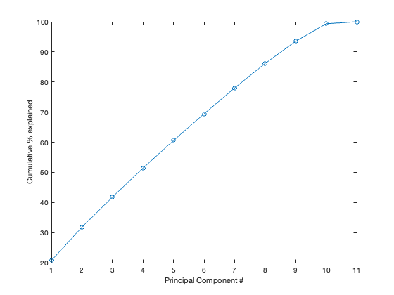
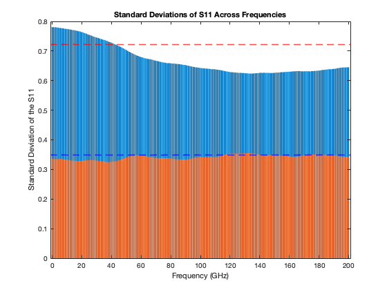
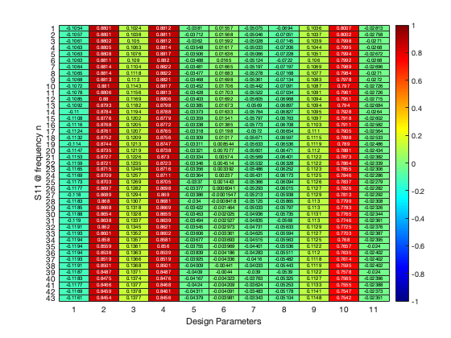
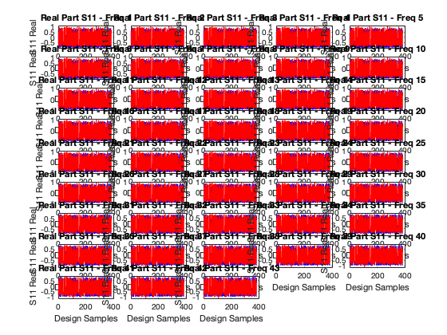
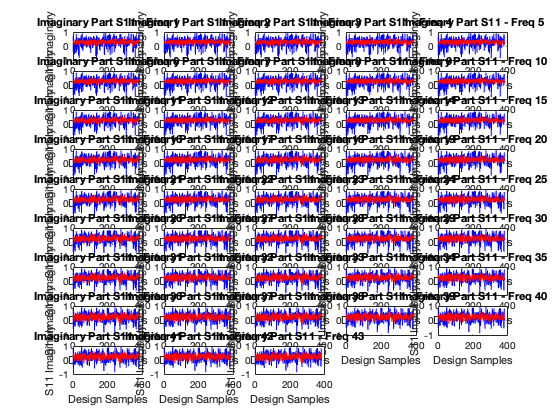

Contents
clc
designParams = table2array(hw1input);
s11_img_matrix = table2array(hw1img);
s11_real_matrix = table2array(hw1real);
frequency = s11_real_matrix(1, :);
real_part = s11_real_matrix(2:end, :);
img_part = s11_img_matrix(2:end, :);
designP_std = zscore(designParams);
N = size(designP_std, 1);
p = size(designP_std, 2);
[designP, mX, sX] = zscore(designP_std);
cov_matrix = cov(designP);
[P, V] = eig(cov_matrix);
V = diag(flipud(diag(V)));
P = fliplr(P);
plot(cumsum(100*diag(V)./sum(diag(V))), "o-");
ylabel("Cumulative % explained");
xlabel("Principal Component #");

PCA
PC = P(:, 1:9);
number_of_PCs = size(PC, 2);
T = designP * PC;
designP_hat = T*PC';
figure;
bar(frequency, std(real_part));
hold on
bar(frequency,std(img_part));
xlabel('Frequency (GHz)');
ylabel('Standard Deviation of the S11');
title('Standard Deviations of S11 Across Frequencies');
mean_stdr = mean(std(real_part));
std_stdr = std(std(real_part));
k = 1;
thresholdr = mean_stdr + k * std_stdr;
mean_stdi = mean(std(img_part));
std_stdi = std(std(img_part));
j = 1;
thresholdi = mean_stdi + j * std_stdi;
hold on;
yline(thresholdr, 'r--', 'LineWidth', 1.5, 'DisplayName', 'Threshold');
hold on;
yline(thresholdi, 'b--', 'LineWidth', 1.5, 'DisplayName', 'Threshold');
hold off
high_dev_s11 = real_part(:,1:43);
correlations = corr(high_dev_s11, designP_hat);
figure;
heatmap(correlations, 'Colormap', jet, 'ColorLimits', [-1, 1]);
xlabel('Design Parameters');
ylabel('S11 @ frequency n');
colorbar;
 
Building the linear regression model.
key_freq_indices = 1:43;
s11_real_selected = real_part(:, key_freq_indices);
s11_img_selected = img_part(:, key_freq_indices);
num_key_freq = length(key_freq_indices);
real_models = cell(num_key_freq, 1);
img_models = cell(num_key_freq, 1);
real_predictions = zeros(size(s11_real_selected));
img_predictions = zeros(size(s11_img_selected));
for i = 1:num_key_freq
real_models{i} = fitlm(designP_std, s11_real_selected(:, i));
real_predictions(:, i) = predict(real_models{i}, designP_std);
img_models{i} = fitlm(designP_std, s11_img_selected(:, i));
img_predictions(:, i) = predict(img_models{i}, designP_std);
end
for i = 1:num_key_freq
fprintf('Linear Regression for Frequency %d (Real Part):\n', key_freq_indices(i));
disp(real_models{i});
fprintf('Linear Regression for Frequency %d (Imaginary Part):\n', key_freq_indices(i));
disp(img_models{i});
end
figure;
for i = 1:num_key_freq
subplot(ceil(num_key_freq / 5), 5, i);
plot(s11_real_selected(:, i), 'b-', 'DisplayName', 'Actual');
hold on;
plot(real_predictions(:, i), 'r-', 'DisplayName', 'Predicted');
title(sprintf('Real Part S11 - Freq %d', key_freq_indices(i)));
xlabel('Design Samples');
ylabel('S11 Real');
end
figure;
for i = 1:num_key_freq
subplot(ceil(num_key_freq / 5), 5, i);
plot(s11_img_selected(:, i), 'b-', 'DisplayName', 'Actual');
hold on;
plot(img_predictions(:, i), 'r-', 'DisplayName', 'Predicted');
title(sprintf('Imaginary Part S11 - Freq %d', key_freq_indices(i)));
xlabel('Design Samples');
ylabel('S11 Imaginary');
end
ss_total = sum((s11_real_selected- mean(s11_real_selected)).^2);
ss_residual = sum((s11_real_selected - real_predictions).^2);
r_squared = 1 - (ss_residual / ss_total);
disp(['R-squared (Real Part): ', num2str(r_squared)]);
ss_total = sum((s11_img_selected- mean(s11_img_selected)).^2);
ss_residual = sum((s11_img_selected - img_predictions).^2);
r_squared = 1 - (ss_residual / ss_total);
disp(['R-squared (Imaginary Part): ', num2str(r_squared)]);
Linear Regression for Frequency 1 (Real Part):
Linear regression model:
y ~ 1 + x1 + x2 + x3 + x4 + x5 + x6 + x7 + x8 + x9 + x10 + x11
Estimated Coefficients:
Estimate SE tStat pValue
_________ ________ ________ __________
(Intercept) -0.18152 0.015201 -11.942 4.6686e-28
x1 -0.034174 0.015512 -2.2031 0.028199
x2 0.061346 0.040506 1.5145 0.13074
x3 -0.01476 0.015404 -0.9582 0.33858
x4 0.65406 0.040677 16.079 1.4345e-44
x5 -0.01771 0.015268 -1.1599 0.24682
x6 -0.016509 0.015313 -1.0781 0.28167
x7 -0.019897 0.015291 -1.3013 0.19397
x8 -0.038811 0.015442 -2.5133 0.012383
x9 0.048374 0.015465 3.128 0.0018981
x10 0.0076038 0.017298 0.43958 0.6605
x11 -0.010495 0.015383 -0.68229 0.49548
Number of observations: 385, Error degrees of freedom: 373
Root Mean Squared Error: 0.298
R-squared: 0.858, Adjusted R-Squared: 0.854
F-statistic vs. constant model: 205, p-value = 9.93e-151
Linear Regression for Frequency 1 (Imaginary Part):
Linear regression model:
y ~ 1 + x1 + x2 + x3 + x4 + x5 + x6 + x7 + x8 + x9 + x10 + x11
Estimated Coefficients:
Estimate SE tStat pValue
__________ ________ ________ __________
(Intercept) 0.28615 0.016154 17.714 2.1938e-51
x1 -0.0096453 0.016484 -0.58512 0.55882
x2 0.24527 0.043044 5.6981 2.4625e-08
x3 0.021336 0.016369 1.3034 0.19324
x4 -0.22075 0.043227 -5.1069 5.2354e-07
x5 -0.012994 0.016225 -0.80085 0.42373
x6 -0.058589 0.016273 -3.6005 0.0003606
x7 -0.010801 0.016249 -0.6647 0.50665
x8 -0.0051657 0.01641 -0.31478 0.7531
x9 -0.035906 0.016434 -2.1849 0.029521
x10 -0.015796 0.018382 -0.85931 0.39072
x11 0.016218 0.016347 0.99211 0.32179
Number of observations: 385, Error degrees of freedom: 373
Root Mean Squared Error: 0.317
R-squared: 0.134, Adjusted R-Squared: 0.109
F-statistic vs. constant model: 5.27, p-value = 9.65e-08
Linear Regression for Frequency 2 (Real Part):
Linear regression model:
y ~ 1 + x1 + x2 + x3 + x4 + x5 + x6 + x7 + x8 + x9 + x10 + x11
Estimated Coefficients:
Estimate SE tStat pValue
_________ ________ ________ __________
(Intercept) -0.18218 0.015191 -11.993 2.9913e-28
x1 -0.034205 0.015501 -2.2066 0.027953
x2 0.065955 0.040478 1.6294 0.10407
x3 -0.014164 0.015393 -0.92012 0.3581
x4 0.65021 0.040649 15.996 3.1823e-44
x5 -0.016885 0.015257 -1.1067 0.26914
x6 -0.01667 0.015302 -1.0894 0.2767
x7 -0.019629 0.01528 -1.2846 0.19974
x8 -0.039731 0.015432 -2.5746 0.010421
x9 0.048349 0.015454 3.1285 0.0018949
x10 0.0060374 0.017286 0.34926 0.72709
x11 -0.009947 0.015372 -0.64708 0.51798
Number of observations: 385, Error degrees of freedom: 373
Root Mean Squared Error: 0.298
R-squared: 0.858, Adjusted R-Squared: 0.854
F-statistic vs. constant model: 205, p-value = 8.74e-151
Linear Regression for Frequency 2 (Imaginary Part):
Linear regression model:
y ~ 1 + x1 + x2 + x3 + x4 + x5 + x6 + x7 + x8 + x9 + x10 + x11
Estimated Coefficients:
Estimate SE tStat pValue
__________ ________ ________ __________
(Intercept) 0.28378 0.016132 17.591 7.1941e-51
x1 -0.0086432 0.016463 -0.52502 0.59988
x2 0.24447 0.042988 5.6871 2.6129e-08
x3 0.021123 0.016348 1.2921 0.19711
x4 -0.2229 0.04317 -5.1633 3.9552e-07
x5 -0.012027 0.016203 -0.74223 0.45842
x6 -0.058269 0.016251 -3.5855 0.00038117
x7 -0.01065 0.016228 -0.65627 0.51205
x8 -0.0036433 0.016389 -0.2223 0.8242
x9 -0.035472 0.016412 -2.1613 0.031311
x10 -0.017653 0.018358 -0.96161 0.33687
x11 0.016116 0.016325 0.98717 0.3242
Number of observations: 385, Error degrees of freedom: 373
Root Mean Squared Error: 0.317
R-squared: 0.133, Adjusted R-Squared: 0.108
F-statistic vs. constant model: 5.22, p-value = 1.16e-07
Linear Regression for Frequency 3 (Real Part):
Linear regression model:
y ~ 1 + x1 + x2 + x3 + x4 + x5 + x6 + x7 + x8 + x9 + x10 + x11
Estimated Coefficients:
Estimate SE tStat pValue
__________ ________ ________ __________
(Intercept) -0.18298 0.015162 -12.069 1.5401e-28
x1 -0.034178 0.015472 -2.209 0.027779
x2 0.070453 0.040401 1.7439 0.082008
x3 -0.013694 0.015364 -0.89128 0.37335
x4 0.64652 0.040572 15.935 5.6649e-44
x5 -0.016094 0.015228 -1.0569 0.29126
x6 -0.016733 0.015273 -1.0956 0.27397
x7 -0.01946 0.015251 -1.276 0.20275
x8 -0.040471 0.015403 -2.6276 0.0089547
x9 0.04842 0.015425 3.1391 0.0018297
x10 0.0043518 0.017253 0.25223 0.801
x11 -0.0094434 0.015343 -0.61549 0.5386
Number of observations: 385, Error degrees of freedom: 373
Root Mean Squared Error: 0.297
R-squared: 0.859, Adjusted R-Squared: 0.855
F-statistic vs. constant model: 206, p-value = 5.23e-151
Linear Regression for Frequency 3 (Imaginary Part):
Linear regression model:
y ~ 1 + x1 + x2 + x3 + x4 + x5 + x6 + x7 + x8 + x9 + x10 + x11
Estimated Coefficients:
Estimate SE tStat pValue
__________ ________ ________ __________
(Intercept) 0.28139 0.01612 17.456 2.6333e-50
x1 -0.0076587 0.01645 -0.46558 0.64178
x2 0.24343 0.042954 5.6673 2.9067e-08
x3 0.020969 0.016335 1.2837 0.20005
x4 -0.22484 0.043136 -5.2122 3.0962e-07
x5 -0.011403 0.016191 -0.70427 0.4817
x6 -0.058142 0.016238 -3.5805 0.00038829
x7 -0.010693 0.016215 -0.65947 0.51
x8 -0.0018668 0.016376 -0.114 0.9093
x9 -0.034926 0.0164 -2.1297 0.033854
x10 -0.019397 0.018344 -1.0574 0.29099
x11 0.015891 0.016312 0.97419 0.33059
Number of observations: 385, Error degrees of freedom: 373
Root Mean Squared Error: 0.316
R-squared: 0.133, Adjusted R-Squared: 0.107
F-statistic vs. constant model: 5.19, p-value = 1.33e-07
Linear Regression for Frequency 4 (Real Part):
Linear regression model:
y ~ 1 + x1 + x2 + x3 + x4 + x5 + x6 + x7 + x8 + x9 + x10 + x11
Estimated Coefficients:
Estimate SE tStat pValue
__________ ________ ________ __________
(Intercept) -0.18401 0.015105 -12.182 5.6926e-29
x1 -0.034052 0.015414 -2.2092 0.027767
x2 0.074877 0.040249 1.8604 0.06362
x3 -0.013292 0.015306 -0.86841 0.38573
x4 0.64303 0.040419 15.909 7.2567e-44
x5 -0.015471 0.015171 -1.0198 0.3085
x6 -0.016812 0.015216 -1.1049 0.26991
x7 -0.019497 0.015194 -1.2832 0.2002
x8 -0.040894 0.015344 -2.6651 0.0080316
x9 0.048702 0.015367 3.1693 0.0016542
x10 0.00245 0.017188 0.14254 0.88673
x11 -0.0090638 0.015285 -0.59298 0.55355
Number of observations: 385, Error degrees of freedom: 373
Root Mean Squared Error: 0.296
R-squared: 0.86, Adjusted R-Squared: 0.855
F-statistic vs. constant model: 208, p-value = 1.68e-151
Linear Regression for Frequency 4 (Imaginary Part):
Linear regression model:
y ~ 1 + x1 + x2 + x3 + x4 + x5 + x6 + x7 + x8 + x9 + x10 + x11
Estimated Coefficients:
Estimate SE tStat pValue
__________ ________ _________ __________
(Intercept) 0.27902 0.016122 17.307 1.1086e-49
x1 -0.0067127 0.016452 -0.40802 0.68349
x2 0.24218 0.04296 5.6374 3.4109e-08
x3 0.020892 0.016337 1.2788 0.20175
x4 -0.22663 0.043142 -5.2532 2.5181e-07
x5 -0.01105 0.016193 -0.68241 0.4954
x6 -0.058196 0.016241 -3.5833 0.00038422
x7 -0.010872 0.016217 -0.67042 0.50301
x8 7.2397e-05 0.016378 0.0044204 0.99648
x9 -0.034327 0.016402 -2.0929 0.037035
x10 -0.02101 0.018346 -1.1452 0.25286
x11 0.015582 0.016315 0.95511 0.34014
Number of observations: 385, Error degrees of freedom: 373
Root Mean Squared Error: 0.316
R-squared: 0.132, Adjusted R-Squared: 0.107
F-statistic vs. constant model: 5.16, p-value = 1.47e-07
Linear Regression for Frequency 5 (Real Part):
Linear regression model:
y ~ 1 + x1 + x2 + x3 + x4 + x5 + x6 + x7 + x8 + x9 + x10 + x11
Estimated Coefficients:
Estimate SE tStat pValue
__________ ________ ________ __________
(Intercept) -0.18527 0.015021 -12.334 1.5034e-29
x1 -0.033818 0.015329 -2.2062 0.027982
x2 0.079255 0.040027 1.98 0.048433
x3 -0.012913 0.015222 -0.84835 0.39679
x4 0.63974 0.040197 15.915 6.8317e-44
x5 -0.015083 0.015087 -0.99971 0.3181
x6 -0.016969 0.015132 -1.1214 0.26284
x7 -0.019788 0.01511 -1.3096 0.19115
x8 -0.040953 0.01526 -2.6837 0.007606
x9 0.049231 0.015282 3.2215 0.0013871
x10 0.00030032 0.017094 0.017569 0.98599
x11 -0.0088413 0.015201 -0.58163 0.56116
Number of observations: 385, Error degrees of freedom: 373
Root Mean Squared Error: 0.295
R-squared: 0.861, Adjusted R-Squared: 0.857
F-statistic vs. constant model: 210, p-value = 3.02e-152
Linear Regression for Frequency 5 (Imaginary Part):
Linear regression model:
y ~ 1 + x1 + x2 + x3 + x4 + x5 + x6 + x7 + x8 + x9 + x10 + x11
Estimated Coefficients:
Estimate SE tStat pValue
__________ ________ ________ __________
(Intercept) 0.27679 0.016135 17.154 4.8393e-49
x1 -0.0058724 0.016466 -0.35665 0.72156
x2 0.24072 0.042995 5.5987 4.1926e-08
x3 0.020886 0.016351 1.2774 0.20226
x4 -0.22843 0.043178 -5.2906 2.0838e-07
x5 -0.010824 0.016206 -0.66789 0.50462
x6 -0.058344 0.016254 -3.5895 0.00037554
x7 -0.011064 0.016231 -0.68169 0.49586
x8 0.0019972 0.016392 0.12184 0.90309
x9 -0.033825 0.016415 -2.0605 0.04004
x10 -0.022348 0.018361 -1.2172 0.22432
x11 0.015268 0.016328 0.93505 0.35037
Number of observations: 385, Error degrees of freedom: 373
Root Mean Squared Error: 0.317
R-squared: 0.132, Adjusted R-Squared: 0.106
F-statistic vs. constant model: 5.15, p-value = 1.55e-07
Linear Regression for Frequency 6 (Real Part):
Linear regression model:
y ~ 1 + x1 + x2 + x3 + x4 + x5 + x6 + x7 + x8 + x9 + x10 + x11
Estimated Coefficients:
Estimate SE tStat pValue
__________ ________ ________ __________
(Intercept) -0.18668 0.014931 -12.503 3.3572e-30
x1 -0.033528 0.015236 -2.2006 0.028379
x2 0.083605 0.039785 2.1014 0.036275
x3 -0.012532 0.01513 -0.8283 0.40803
x4 0.63652 0.039954 15.931 5.8677e-44
x5 -0.014891 0.014996 -0.99301 0.32135
x6 -0.017174 0.015041 -1.1419 0.25424
x7 -0.020292 0.015019 -1.3511 0.17747
x8 -0.040737 0.015168 -2.6857 0.0075602
x9 0.049913 0.01519 3.286 0.0011125
x10 -0.0019745 0.01699 -0.11621 0.90754
x11 -0.0087496 0.015109 -0.5791 0.56287
Number of observations: 385, Error degrees of freedom: 373
Root Mean Squared Error: 0.293
R-squared: 0.862, Adjusted R-Squared: 0.858
F-statistic vs. constant model: 212, p-value = 4.54e-153
Linear Regression for Frequency 6 (Imaginary Part):
Linear regression model:
y ~ 1 + x1 + x2 + x3 + x4 + x5 + x6 + x7 + x8 + x9 + x10 + x11
Estimated Coefficients:
Estimate SE tStat pValue
__________ ________ ________ __________
(Intercept) 0.27478 0.016146 17.018 1.7841e-48
x1 -0.0052023 0.016476 -0.31574 0.75238
x2 0.23902 0.043024 5.5554 5.275e-08
x3 0.020932 0.016361 1.2794 0.20156
x4 -0.23034 0.043206 -5.3311 1.6943e-07
x5 -0.010583 0.016217 -0.65258 0.51443
x6 -0.058508 0.016265 -3.5972 0.00036501
x7 -0.011149 0.016241 -0.68648 0.49283
x8 0.0037528 0.016403 0.22879 0.81916
x9 -0.033552 0.016426 -2.0426 0.041797
x10 -0.023274 0.018373 -1.2667 0.20605
x11 0.015025 0.016339 0.91959 0.35838
Number of observations: 385, Error degrees of freedom: 373
Root Mean Squared Error: 0.317
R-squared: 0.132, Adjusted R-Squared: 0.106
F-statistic vs. constant model: 5.15, p-value = 1.53e-07
Linear Regression for Frequency 7 (Real Part):
Linear regression model:
y ~ 1 + x1 + x2 + x3 + x4 + x5 + x6 + x7 + x8 + x9 + x10 + x11
Estimated Coefficients:
Estimate SE tStat pValue
__________ ________ ________ __________
(Intercept) -0.18813 0.014854 -12.665 7.9589e-31
x1 -0.033269 0.015158 -2.1949 0.028788
x2 0.087907 0.03958 2.221 0.026952
x3 -0.012135 0.015052 -0.80625 0.42061
x4 0.63319 0.039748 15.93 5.9339e-44
x5 -0.014799 0.014919 -0.99198 0.32185
x6 -0.017364 0.014963 -1.1604 0.24661
x7 -0.020925 0.014941 -1.4005 0.1622
x8 -0.040392 0.01509 -2.6768 0.0077608
x9 0.050596 0.015111 3.3482 0.00089627
x10 -0.0041826 0.016903 -0.24745 0.8047
x11 -0.0087287 0.015031 -0.5807 0.56179
Number of observations: 385, Error degrees of freedom: 373
Root Mean Squared Error: 0.291
R-squared: 0.863, Adjusted R-Squared: 0.859
F-statistic vs. constant model: 214, p-value = 9.47e-154
Linear Regression for Frequency 7 (Imaginary Part):
Linear regression model:
y ~ 1 + x1 + x2 + x3 + x4 + x5 + x6 + x7 + x8 + x9 + x10 + x11
Estimated Coefficients:
Estimate SE tStat pValue
__________ ________ ________ __________
(Intercept) 0.27302 0.016141 16.915 4.8205e-48
x1 -0.0047143 0.016471 -0.28622 0.77487
x2 0.237 0.043009 5.5105 6.6856e-08
x3 0.021019 0.016356 1.2851 0.19956
x4 -0.23229 0.043192 -5.378 1.3317e-07
x5 -0.010263 0.016211 -0.63306 0.52708
x6 -0.05868 0.016259 -3.609 0.00034929
x7 -0.011071 0.016236 -0.6819 0.49572
x8 0.005302 0.016397 0.32335 0.74661
x9 -0.033524 0.016421 -2.0416 0.041895
x10 -0.023779 0.018367 -1.2947 0.19624
x11 0.014891 0.016333 0.91166 0.36254
Number of observations: 385, Error degrees of freedom: 373
Root Mean Squared Error: 0.317
R-squared: 0.133, Adjusted R-Squared: 0.107
F-statistic vs. constant model: 5.18, p-value = 1.36e-07
Linear Regression for Frequency 8 (Real Part):
Linear regression model:
y ~ 1 + x1 + x2 + x3 + x4 + x5 + x6 + x7 + x8 + x9 + x10 + x11
Estimated Coefficients:
Estimate SE tStat pValue
__________ ________ ________ __________
(Intercept) -0.18952 0.014802 -12.804 2.314e-31
x1 -0.03311 0.015105 -2.192 0.028996
x2 0.092067 0.039442 2.3343 0.020112
x3 -0.01171 0.014999 -0.78073 0.43546
x4 0.62972 0.039609 15.899 8.0211e-44
x5 -0.014725 0.014867 -0.99048 0.32258
x6 -0.017513 0.014911 -1.1745 0.24094
x7 -0.021612 0.014889 -1.4515 0.14748
x8 -0.040013 0.015037 -2.661 0.0081277
x9 0.051183 0.015059 3.3989 0.00074957
x10 -0.0061889 0.016844 -0.36743 0.71351
x11 -0.0087258 0.014979 -0.58255 0.56055
Number of observations: 385, Error degrees of freedom: 373
Root Mean Squared Error: 0.29
R-squared: 0.864, Adjusted R-Squared: 0.86
F-statistic vs. constant model: 216, p-value = 3.63e-154
Linear Regression for Frequency 8 (Imaginary Part):
Linear regression model:
y ~ 1 + x1 + x2 + x3 + x4 + x5 + x6 + x7 + x8 + x9 + x10 + x11
Estimated Coefficients:
Estimate SE tStat pValue
__________ ________ ________ __________
(Intercept) 0.27144 0.016115 16.844 9.514e-48
x1 -0.0043736 0.016444 -0.26596 0.79041
x2 0.23461 0.04294 5.4636 8.5459e-08
x3 0.02114 0.01633 1.2946 0.19627
x4 -0.23412 0.043122 -5.4291 1.0226e-07
x5 -0.0098679 0.016185 -0.60968 0.54245
x6 -0.05891 0.016233 -3.629 0.00032424
x7 -0.010828 0.01621 -0.66801 0.50454
x8 0.0067033 0.016371 0.40947 0.68243
x9 -0.033662 0.016394 -2.0533 0.040745
x10 -0.023965 0.018338 -1.3069 0.19205
x11 0.014857 0.016307 0.91104 0.36286
Number of observations: 385, Error degrees of freedom: 373
Root Mean Squared Error: 0.316
R-squared: 0.134, Adjusted R-Squared: 0.108
F-statistic vs. constant model: 5.23, p-value = 1.1e-07
Linear Regression for Frequency 9 (Real Part):
Linear regression model:
y ~ 1 + x1 + x2 + x3 + x4 + x5 + x6 + x7 + x8 + x9 + x10 + x11
Estimated Coefficients:
Estimate SE tStat pValue
__________ ________ ________ __________
(Intercept) -0.19083 0.014776 -12.915 8.5282e-32
x1 -0.03309 0.015078 -2.1946 0.028809
x2 0.09593 0.039373 2.4364 0.015299
x3 -0.011231 0.014973 -0.75007 0.45369
x4 0.62622 0.03954 15.838 1.4308e-43
x5 -0.01462 0.014841 -0.98514 0.32519
x6 -0.017648 0.014885 -1.1856 0.23652
x7 -0.022307 0.014863 -1.5008 0.13424
x8 -0.039611 0.015011 -2.6389 0.0086667
x9 0.051665 0.015032 3.4369 0.00065467
x10 -0.0079347 0.016814 -0.4719 0.63727
x11 -0.0087184 0.014952 -0.58307 0.5602
Number of observations: 385, Error degrees of freedom: 373
Root Mean Squared Error: 0.29
R-squared: 0.864, Adjusted R-Squared: 0.86
F-statistic vs. constant model: 216, p-value = 2.65e-154
Linear Regression for Frequency 9 (Imaginary Part):
Linear regression model:
y ~ 1 + x1 + x2 + x3 + x4 + x5 + x6 + x7 + x8 + x9 + x10 + x11
Estimated Coefficients:
Estimate SE tStat pValue
__________ ________ ________ __________
(Intercept) 0.26997 0.016072 16.798 1.4836e-47
x1 -0.0041267 0.016401 -0.25162 0.80147
x2 0.23184 0.042826 5.4135 1.1085e-07
x3 0.021288 0.016286 1.3071 0.19198
x4 -0.23571 0.043007 -5.4807 7.8169e-08
x5 -0.0094286 0.016142 -0.5841 0.55951
x6 -0.059239 0.01619 -3.659 0.00028971
x7 -0.010441 0.016166 -0.64585 0.51877
x8 0.0080279 0.016327 0.4917 0.62322
x9 -0.033872 0.016351 -2.0716 0.038988
x10 -0.023958 0.018289 -1.31 0.191
x11 0.014901 0.016264 0.9162 0.36015
Number of observations: 385, Error degrees of freedom: 373
Root Mean Squared Error: 0.315
R-squared: 0.135, Adjusted R-Squared: 0.11
F-statistic vs. constant model: 5.31, p-value = 8.16e-08
Linear Regression for Frequency 10 (Real Part):
Linear regression model:
y ~ 1 + x1 + x2 + x3 + x4 + x5 + x6 + x7 + x8 + x9 + x10 + x11
Estimated Coefficients:
Estimate SE tStat pValue
__________ ________ ________ __________
(Intercept) -0.19208 0.014772 -13.003 3.8616e-32
x1 -0.033228 0.015074 -2.2043 0.028114
x2 0.099344 0.039362 2.5238 0.012023
x3 -0.010664 0.014969 -0.71242 0.47665
x4 0.62281 0.039529 15.756 3.116e-43
x5 -0.014458 0.014837 -0.9745 0.33044
x6 -0.017812 0.014881 -1.197 0.23207
x7 -0.022988 0.014859 -1.5471 0.1227
x8 -0.039151 0.015007 -2.6089 0.0094487
x9 0.052077 0.015028 3.4653 0.00059129
x10 -0.0094121 0.01681 -0.55992 0.57587
x11 -0.0087036 0.014948 -0.58224 0.56076
Number of observations: 385, Error degrees of freedom: 373
Root Mean Squared Error: 0.29
R-squared: 0.864, Adjusted R-Squared: 0.86
F-statistic vs. constant model: 216, p-value = 3.37e-154
Linear Regression for Frequency 10 (Imaginary Part):
Linear regression model:
y ~ 1 + x1 + x2 + x3 + x4 + x5 + x6 + x7 + x8 + x9 + x10 + x11
Estimated Coefficients:
Estimate SE tStat pValue
__________ ________ ________ __________
(Intercept) 0.26857 0.016017 16.767 1.9899e-47
x1 -0.0039133 0.016345 -0.23942 0.81091
x2 0.22882 0.042681 5.3611 1.4532e-07
x3 0.021431 0.016231 1.3204 0.18752
x4 -0.23707 0.042862 -5.5311 5.9994e-08
x5 -0.0089874 0.016088 -0.55865 0.57674
x6 -0.059675 0.016135 -3.6984 0.0002496
x7 -0.0099371 0.016112 -0.61675 0.53777
x8 0.0093015 0.016272 0.57163 0.56792
x9 -0.034114 0.016295 -2.0934 0.036984
x10 -0.023883 0.018227 -1.3103 0.19089
x11 0.015019 0.016209 0.92657 0.35475
Number of observations: 385, Error degrees of freedom: 373
Root Mean Squared Error: 0.314
R-squared: 0.137, Adjusted R-Squared: 0.112
F-statistic vs. constant model: 5.4, p-value = 5.53e-08
Linear Regression for Frequency 11 (Real Part):
Linear regression model:
y ~ 1 + x1 + x2 + x3 + x4 + x5 + x6 + x7 + x8 + x9 + x10 + x11
Estimated Coefficients:
Estimate SE tStat pValue
__________ ________ ________ __________
(Intercept) -0.19328 0.014786 -13.071 2.087e-32
x1 -0.033512 0.015089 -2.2209 0.026956
x2 0.10227 0.039401 2.5956 0.0098143
x3 -0.0099986 0.014984 -0.6673 0.505
x4 0.61958 0.039568 15.659 7.8332e-43
x5 -0.014246 0.014851 -0.95923 0.33806
x6 -0.018029 0.014895 -1.2104 0.22689
x7 -0.02366 0.014874 -1.5907 0.11252
x8 -0.038608 0.015021 -2.5702 0.010552
x9 0.052438 0.015043 3.4858 0.00054902
x10 -0.010673 0.016826 -0.63429 0.52628
x11 -0.00866 0.014963 -0.57875 0.56311
Number of observations: 385, Error degrees of freedom: 373
Root Mean Squared Error: 0.29
R-squared: 0.864, Adjusted R-Squared: 0.86
F-statistic vs. constant model: 215, p-value = 6.93e-154
Linear Regression for Frequency 11 (Imaginary Part):
Linear regression model:
y ~ 1 + x1 + x2 + x3 + x4 + x5 + x6 + x7 + x8 + x9 + x10 + x11
Estimated Coefficients:
Estimate SE tStat pValue
__________ ________ ________ __________
(Intercept) 0.26722 0.015956 16.747 2.4062e-47
x1 -0.003673 0.016282 -0.22558 0.82165
x2 0.22575 0.042517 5.3097 1.8904e-07
x3 0.021509 0.016169 1.3303 0.18424
x4 -0.23832 0.042697 -5.5817 4.589e-08
x5 -0.008594 0.016026 -0.53626 0.5921
x6 -0.060201 0.016073 -3.7454 0.00020859
x7 -0.0093402 0.01605 -0.58194 0.56096
x8 0.010497 0.016209 0.64757 0.51766
x9 -0.034392 0.016233 -2.1187 0.034778
x10 -0.023861 0.018157 -1.3142 0.18959
x11 0.015227 0.016146 0.94306 0.34626
Number of observations: 385, Error degrees of freedom: 373
Root Mean Squared Error: 0.313
R-squared: 0.14, Adjusted R-Squared: 0.115
F-statistic vs. constant model: 5.52, p-value = 3.41e-08
Linear Regression for Frequency 12 (Real Part):
Linear regression model:
y ~ 1 + x1 + x2 + x3 + x4 + x5 + x6 + x7 + x8 + x9 + x10 + x11
Estimated Coefficients:
Estimate SE tStat pValue
__________ ________ ________ __________
(Intercept) -0.19441 0.014819 -13.119 1.3546e-32
x1 -0.033903 0.015122 -2.242 0.025552
x2 0.10483 0.039487 2.6549 0.0082727
x3 -0.0092641 0.015016 -0.61694 0.53765
x4 0.61646 0.039654 15.546 2.2806e-42
x5 -0.014026 0.014884 -0.94235 0.34663
x6 -0.018295 0.014928 -1.2256 0.22113
x7 -0.024355 0.014906 -1.6339 0.10312
x8 -0.038004 0.015054 -2.5245 0.012001
x9 0.052712 0.015076 3.4964 0.00052832
x10 -0.011834 0.016863 -0.7018 0.48324
x11 -0.0085258 0.014996 -0.56855 0.57001
Number of observations: 385, Error degrees of freedom: 373
Root Mean Squared Error: 0.291
R-squared: 0.863, Adjusted R-Squared: 0.859
F-statistic vs. constant model: 213, p-value = 2.26e-153
Linear Regression for Frequency 12 (Imaginary Part):
Linear regression model:
y ~ 1 + x1 + x2 + x3 + x4 + x5 + x6 + x7 + x8 + x9 + x10 + x11
Estimated Coefficients:
Estimate SE tStat pValue
__________ ________ ________ __________
(Intercept) 0.2659 0.015888 16.736 2.6756e-47
x1 -0.0033638 0.016213 -0.20748 0.83575
x2 0.22281 0.042335 5.263 2.3966e-07
x3 0.021452 0.0161 1.3324 0.18353
x4 -0.23956 0.042515 -5.6347 3.4614e-08
x5 -0.0082773 0.015957 -0.51871 0.60427
x6 -0.060815 0.016005 -3.7998 0.00016903
x7 -0.0086384 0.015981 -0.54053 0.58915
x8 0.011574 0.01614 0.71711 0.47376
x9 -0.034702 0.016163 -2.1469 0.032443
x10 -0.023957 0.018079 -1.3251 0.18595
x11 0.015521 0.016078 0.96538 0.33498
Number of observations: 385, Error degrees of freedom: 373
Root Mean Squared Error: 0.312
R-squared: 0.143, Adjusted R-Squared: 0.118
F-statistic vs. constant model: 5.67, p-value = 1.9e-08
Linear Regression for Frequency 13 (Real Part):
Linear regression model:
y ~ 1 + x1 + x2 + x3 + x4 + x5 + x6 + x7 + x8 + x9 + x10 + x11
Estimated Coefficients:
Estimate SE tStat pValue
__________ ________ ________ __________
(Intercept) -0.19546 0.014867 -13.147 1.0533e-32
x1 -0.034356 0.015172 -2.2645 0.024116
x2 0.10721 0.039617 2.7061 0.007121
x3 -0.0085307 0.015066 -0.56623 0.57158
x4 0.61335 0.039785 15.417 7.7332e-42
x5 -0.013847 0.014933 -0.92729 0.35437
x6 -0.018617 0.014977 -1.243 0.21463
x7 -0.025082 0.014955 -1.6772 0.094343
x8 -0.037389 0.015104 -2.4755 0.013747
x9 0.052868 0.015125 3.4953 0.00053046
x10 -0.013016 0.016918 -0.76933 0.44219
x11 -0.008244 0.015045 -0.54796 0.58405
Number of observations: 385, Error degrees of freedom: 373
Root Mean Squared Error: 0.292
R-squared: 0.862, Adjusted R-Squared: 0.858
F-statistic vs. constant model: 211, p-value = 1.14e-152
Linear Regression for Frequency 13 (Imaginary Part):
Linear regression model:
y ~ 1 + x1 + x2 + x3 + x4 + x5 + x6 + x7 + x8 + x9 + x10 + x11
Estimated Coefficients:
Estimate SE tStat pValue
__________ ________ ________ __________
(Intercept) 0.26456 0.015815 16.729 2.878e-47
x1 -0.0029818 0.016138 -0.18477 0.85351
x2 0.21999 0.042141 5.2203 2.973e-07
x3 0.021208 0.016026 1.3234 0.18652
x4 -0.24072 0.042319 -5.6883 2.5959e-08
x5 -0.0080158 0.015884 -0.50465 0.6141
x6 -0.061568 0.015931 -3.8647 0.00013117
x7 -0.0077506 0.015908 -0.48722 0.62639
x8 0.012528 0.016066 0.77978 0.43602
x9 -0.034962 0.016089 -2.1731 0.030404
x10 -0.024124 0.017996 -1.3405 0.18089
x11 0.015823 0.016004 0.98874 0.32343
Number of observations: 385, Error degrees of freedom: 373
Root Mean Squared Error: 0.31
R-squared: 0.147, Adjusted R-Squared: 0.122
F-statistic vs. constant model: 5.83, p-value = 9.81e-09
Linear Regression for Frequency 14 (Real Part):
Linear regression model:
y ~ 1 + x1 + x2 + x3 + x4 + x5 + x6 + x7 + x8 + x9 + x10 + x11
Estimated Coefficients:
Estimate SE tStat pValue
__________ ________ ________ __________
(Intercept) -0.1965 0.014924 -13.167 8.8243e-33
x1 -0.034861 0.015229 -2.2891 0.022634
x2 0.1094 0.039767 2.751 0.0062313
x3 -0.0079081 0.015123 -0.52292 0.60134
x4 0.61032 0.039936 15.283 2.7507e-41
x5 -0.013711 0.014989 -0.91472 0.36093
x6 -0.019101 0.015034 -1.2706 0.20467
x7 -0.02573 0.015012 -1.714 0.087364
x8 -0.036801 0.015161 -2.4274 0.015682
x9 0.052989 0.015183 3.4901 0.00054064
x10 -0.01422 0.016983 -0.83736 0.40293
x11 -0.007852 0.015102 -0.51993 0.60342
Number of observations: 385, Error degrees of freedom: 373
Root Mean Squared Error: 0.293
R-squared: 0.86, Adjusted R-Squared: 0.856
F-statistic vs. constant model: 209, p-value = 7.06e-152
Linear Regression for Frequency 14 (Imaginary Part):
Linear regression model:
y ~ 1 + x1 + x2 + x3 + x4 + x5 + x6 + x7 + x8 + x9 + x10 + x11
Estimated Coefficients:
Estimate SE tStat pValue
__________ ________ ________ __________
(Intercept) 0.2631 0.015743 16.712 3.3748e-47
x1 -0.0025501 0.016065 -0.15873 0.87397
x2 0.21714 0.041951 5.176 3.7123e-07
x3 0.020759 0.015953 1.3013 0.19397
x4 -0.24167 0.042128 -5.7366 1.9993e-08
x5 -0.007752 0.015812 -0.49025 0.62425
x6 -0.062532 0.015859 -3.943 9.612e-05
x7 -0.0065639 0.015836 -0.41449 0.67875
x8 0.013386 0.015993 0.83699 0.40313
x9 -0.035048 0.016016 -2.1882 0.029272
x10 -0.024242 0.017915 -1.3532 0.17683
x11 0.016012 0.015931 1.005 0.31553
Number of observations: 385, Error degrees of freedom: 373
Root Mean Squared Error: 0.309
R-squared: 0.15, Adjusted R-Squared: 0.125
F-statistic vs. constant model: 5.99, p-value = 5.02e-09
Linear Regression for Frequency 15 (Real Part):
Linear regression model:
y ~ 1 + x1 + x2 + x3 + x4 + x5 + x6 + x7 + x8 + x9 + x10 + x11
Estimated Coefficients:
Estimate SE tStat pValue
__________ ________ ________ __________
(Intercept) -0.19766 0.014969 -13.205 6.2728e-33
x1 -0.035447 0.015276 -2.3205 0.020854
x2 0.11121 0.039888 2.7879 0.005576
x3 -0.0075399 0.015169 -0.49706 0.61944
x4 0.60763 0.040057 15.169 8.0277e-41
x5 -0.013555 0.015035 -0.90159 0.36786
x6 -0.019975 0.01508 -1.3247 0.1861
x7 -0.026042 0.015058 -1.7295 0.084547
x8 -0.036246 0.015207 -2.3835 0.017648
x9 0.053302 0.015229 3.5 0.00052152
x10 -0.015306 0.017034 -0.89855 0.36947
x11 -0.0075059 0.015148 -0.4955 0.62054
Number of observations: 385, Error degrees of freedom: 373
Root Mean Squared Error: 0.294
R-squared: 0.859, Adjusted R-Squared: 0.855
F-statistic vs. constant model: 207, p-value = 3.41e-151
Linear Regression for Frequency 15 (Imaginary Part):
Linear regression model:
y ~ 1 + x1 + x2 + x3 + x4 + x5 + x6 + x7 + x8 + x9 + x10 + x11
Estimated Coefficients:
Estimate SE tStat pValue
__________ ________ ________ __________
(Intercept) 0.26154 0.015685 16.675 4.8305e-47
x1 -0.0020652 0.016006 -0.12903 0.8974
x2 0.21426 0.041795 5.1264 4.7518e-07
x3 0.020179 0.015894 1.2696 0.20501
x4 -0.24242 0.041972 -5.7759 1.615e-08
x5 -0.0074656 0.015754 -0.4739 0.63585
x6 -0.06364 0.0158 -4.0278 6.825e-05
x7 -0.0051181 0.015777 -0.32439 0.74582
x8 0.014186 0.015934 0.8903 0.37388
x9 -0.034966 0.015957 -2.1913 0.02905
x10 -0.024287 0.017848 -1.3607 0.17442
x11 0.016054 0.015872 1.0114 0.31247
Number of observations: 385, Error degrees of freedom: 373
Root Mean Squared Error: 0.308
R-squared: 0.154, Adjusted R-Squared: 0.129
F-statistic vs. constant model: 6.15, p-value = 2.66e-09
Linear Regression for Frequency 16 (Real Part):
Linear regression model:
y ~ 1 + x1 + x2 + x3 + x4 + x5 + x6 + x7 + x8 + x9 + x10 + x11
Estimated Coefficients:
Estimate SE tStat pValue
__________ ________ ________ __________
(Intercept) -0.19904 0.014996 -13.273 3.3825e-33
x1 -0.036123 0.015303 -2.3605 0.018763
x2 0.11254 0.039959 2.8163 0.005116
x3 -0.0074729 0.015196 -0.49177 0.62317
x4 0.60542 0.040129 15.087 1.7378e-40
x5 -0.013342 0.015062 -0.88584 0.37627
x6 -0.021331 0.015106 -1.412 0.15877
x7 -0.025898 0.015084 -1.7169 0.086835
x8 -0.035716 0.015234 -2.3445 0.019577
x9 0.053921 0.015256 3.5344 0.00046011
x10 -0.016205 0.017065 -0.9496 0.34293
x11 -0.0072977 0.015175 -0.4809 0.63087
Number of observations: 385, Error degrees of freedom: 373
Root Mean Squared Error: 0.294
R-squared: 0.858, Adjusted R-Squared: 0.854
F-statistic vs. constant model: 205, p-value = 1.04e-150
Linear Regression for Frequency 16 (Imaginary Part):
Linear regression model:
y ~ 1 + x1 + x2 + x3 + x4 + x5 + x6 + x7 + x8 + x9 + x10 + x11
Estimated Coefficients:
Estimate SE tStat pValue
__________ ________ _________ __________
(Intercept) 0.26003 0.015638 16.628 7.5444e-47
x1 -0.0014614 0.015958 -0.091577 0.92708
x2 0.21167 0.041669 5.0798 5.9825e-07
x3 0.019673 0.015846 1.2415 0.2152
x4 -0.24335 0.041846 -5.8154 1.3015e-08
x5 -0.0072248 0.015706 -0.46 0.64579
x6 -0.064569 0.015753 -4.0989 5.0967e-05
x7 -0.0037312 0.01573 -0.23721 0.81263
x8 0.014951 0.015886 0.94116 0.34723
x9 -0.034984 0.015909 -2.199 0.02849
x10 -0.02445 0.017795 -1.374 0.17026
x11 0.016102 0.015825 1.0176 0.30955
Number of observations: 385, Error degrees of freedom: 373
Root Mean Squared Error: 0.307
R-squared: 0.157, Adjusted R-Squared: 0.132
F-statistic vs. constant model: 6.32, p-value = 1.36e-09
Linear Regression for Frequency 17 (Real Part):
Linear regression model:
y ~ 1 + x1 + x2 + x3 + x4 + x5 + x6 + x7 + x8 + x9 + x10 + x11
Estimated Coefficients:
Estimate SE tStat pValue
__________ ________ ________ __________
(Intercept) -0.20051 0.015018 -13.351 1.6649e-33
x1 -0.036817 0.015326 -2.4023 0.016779
x2 0.1137 0.040019 2.8412 0.0047411
x3 -0.0075584 0.015219 -0.49666 0.61972
x4 0.60337 0.040188 15.014 3.4639e-40
x5 -0.013135 0.015084 -0.87077 0.38444
x6 -0.022922 0.015129 -1.5151 0.13058
x7 -0.025533 0.015107 -1.6902 0.09183
x8 -0.035198 0.015257 -2.3071 0.021599
x9 0.054639 0.015279 3.5761 0.00039466
x10 -0.017105 0.01709 -1.0009 0.31752
x11 -0.0071041 0.015198 -0.46744 0.64046
Number of observations: 385, Error degrees of freedom: 373
Root Mean Squared Error: 0.295
R-squared: 0.857, Adjusted R-Squared: 0.853
F-statistic vs. constant model: 204, p-value = 2.92e-150
Linear Regression for Frequency 17 (Imaginary Part):
Linear regression model:
y ~ 1 + x1 + x2 + x3 + x4 + x5 + x6 + x7 + x8 + x9 + x10 + x11
Estimated Coefficients:
Estimate SE tStat pValue
___________ ________ _________ __________
(Intercept) 0.25869 0.015587 16.597 1.0171e-46
x1 -0.00068718 0.015906 -0.043203 0.96556
x2 0.20964 0.041534 5.0474 7.0141e-07
x3 0.019396 0.015795 1.228 0.22022
x4 -0.24475 0.04171 -5.8679 9.7514e-09
x5 -0.0070855 0.015655 -0.45259 0.6511
x6 -0.065068 0.015702 -4.144 4.2264e-05
x7 -0.0026567 0.015679 -0.16945 0.86554
x8 0.015695 0.015834 0.99119 0.32224
x9 -0.035317 0.015857 -2.2272 0.02653
x10 -0.024883 0.017737 -1.4029 0.16148
x11 0.016284 0.015773 1.0324 0.30256
Number of observations: 385, Error degrees of freedom: 373
Root Mean Squared Error: 0.306
R-squared: 0.161, Adjusted R-Squared: 0.136
F-statistic vs. constant model: 6.51, p-value = 6.08e-10
Linear Regression for Frequency 18 (Real Part):
Linear regression model:
y ~ 1 + x1 + x2 + x3 + x4 + x5 + x6 + x7 + x8 + x9 + x10 + x11
Estimated Coefficients:
Estimate SE tStat pValue
__________ ________ ________ __________
(Intercept) -0.20194 0.015044 -13.424 8.5883e-34
x1 -0.037454 0.015352 -2.4397 0.015163
x2 0.11504 0.040087 2.8697 0.0043425
x3 -0.0076304 0.015244 -0.50054 0.61699
x4 0.60114 0.040256 14.933 7.4e-40
x5 -0.013 0.01511 -0.86038 0.39013
x6 -0.024475 0.015154 -1.6151 0.10714
x7 -0.025211 0.015132 -1.6661 0.096542
x8 -0.03468 0.015283 -2.2693 0.023823
x9 0.055222 0.015305 3.6082 0.00035038
x10 -0.018212 0.017119 -1.0638 0.28809
x11 -0.0067899 0.015224 -0.44601 0.65585
Number of observations: 385, Error degrees of freedom: 373
Root Mean Squared Error: 0.295
R-squared: 0.857, Adjusted R-Squared: 0.852
F-statistic vs. constant model: 202, p-value = 9.23e-150
Linear Regression for Frequency 18 (Imaginary Part):
Linear regression model:
y ~ 1 + x1 + x2 + x3 + x4 + x5 + x6 + x7 + x8 + x9 + x10 + x11
Estimated Coefficients:
Estimate SE tStat pValue
__________ ________ ________ __________
(Intercept) 0.25751 0.015531 16.581 1.1909e-46
x1 0.00023338 0.015848 0.014726 0.98826
x2 0.20805 0.041384 5.0273 7.7399e-07
x3 0.019324 0.015738 1.2279 0.22028
x4 -0.24652 0.041559 -5.9318 6.8419e-09
x5 -0.0070118 0.015599 -0.44951 0.65333
x6 -0.065188 0.015645 -4.1667 3.8438e-05
x7 -0.0018241 0.015622 -0.11676 0.90711
x8 0.016422 0.015777 1.0409 0.29862
x9 -0.035892 0.0158 -2.2716 0.023678
x10 -0.025496 0.017673 -1.4427 0.14995
x11 0.01653 0.015716 1.0518 0.29357
Number of observations: 385, Error degrees of freedom: 373
Root Mean Squared Error: 0.305
R-squared: 0.166, Adjusted R-Squared: 0.141
F-statistic vs. constant model: 6.74, p-value = 2.43e-10
Linear Regression for Frequency 19 (Real Part):
Linear regression model:
y ~ 1 + x1 + x2 + x3 + x4 + x5 + x6 + x7 + x8 + x9 + x10 + x11
Estimated Coefficients:
Estimate SE tStat pValue
__________ ________ ________ __________
(Intercept) -0.20332 0.015066 -13.495 4.4843e-34
x1 -0.038004 0.015375 -2.4718 0.013888
x2 0.11665 0.040147 2.9056 0.003884
x3 -0.0076265 0.015267 -0.49953 0.6177
x4 0.59862 0.040317 14.848 1.642e-39
x5 -0.012942 0.015133 -0.85525 0.39296
x6 -0.025901 0.015177 -1.7066 0.088736
x7 -0.024992 0.015155 -1.6491 0.099972
x8 -0.034151 0.015306 -2.2313 0.026257
x9 0.055622 0.015328 3.6288 0.00032443
x10 -0.01957 0.017145 -1.1414 0.25443
x11 -0.0063502 0.015247 -0.4165 0.67728
Number of observations: 385, Error degrees of freedom: 373
Root Mean Squared Error: 0.296
R-squared: 0.856, Adjusted R-Squared: 0.851
F-statistic vs. constant model: 201, p-value = 2.93e-149
Linear Regression for Frequency 19 (Imaginary Part):
Linear regression model:
y ~ 1 + x1 + x2 + x3 + x4 + x5 + x6 + x7 + x8 + x9 + x10 + x11
Estimated Coefficients:
Estimate SE tStat pValue
__________ ________ _________ __________
(Intercept) 0.25637 0.015478 16.564 1.3994e-46
x1 0.0012522 0.015795 0.079281 0.93685
x2 0.20668 0.041244 5.0112 8.3694e-07
x3 0.019371 0.015684 1.2351 0.21759
x4 -0.24845 0.041418 -5.9985 4.7106e-09
x5 -0.006945 0.015546 -0.44675 0.65532
x6 -0.065082 0.015592 -4.1741 3.7269e-05
x7 -0.0010673 0.015569 -0.068552 0.94538
x8 0.017133 0.015724 1.0896 0.27659
x9 -0.036549 0.015746 -2.3211 0.02082
x10 -0.026132 0.017613 -1.4837 0.13874
x11 0.016725 0.015663 1.0678 0.28629
Number of observations: 385, Error degrees of freedom: 373
Root Mean Squared Error: 0.304
R-squared: 0.171, Adjusted R-Squared: 0.146
F-statistic vs. constant model: 6.98, p-value = 9.39e-11
Linear Regression for Frequency 20 (Real Part):
Linear regression model:
y ~ 1 + x1 + x2 + x3 + x4 + x5 + x6 + x7 + x8 + x9 + x10 + x11
Estimated Coefficients:
Estimate SE tStat pValue
__________ ________ ________ __________
(Intercept) -0.20468 0.01508 -13.573 2.191e-34
x1 -0.038465 0.015388 -2.4996 0.012861
x2 0.11853 0.040182 2.9499 0.0033798
x3 -0.0075418 0.015281 -0.49355 0.62192
x4 0.59585 0.040353 14.766 3.5294e-39
x5 -0.012932 0.015146 -0.85384 0.39374
x6 -0.027209 0.015191 -1.7912 0.074072
x7 -0.024829 0.015169 -1.6369 0.1025
x8 -0.033602 0.015319 -2.1935 0.02889
x9 0.055884 0.015341 3.6427 0.00030793
x10 -0.021138 0.01716 -1.2318 0.21879
x11 -0.0058475 0.01526 -0.3832 0.70179
Number of observations: 385, Error degrees of freedom: 373
Root Mean Squared Error: 0.296
R-squared: 0.855, Adjusted R-Squared: 0.851
F-statistic vs. constant model: 200, p-value = 8e-149
Linear Regression for Frequency 20 (Imaginary Part):
Linear regression model:
y ~ 1 + x1 + x2 + x3 + x4 + x5 + x6 + x7 + x8 + x9 + x10 + x11
Estimated Coefficients:
Estimate SE tStat pValue
___________ ________ _________ __________
(Intercept) 0.25525 0.015435 16.537 1.8153e-46
x1 0.0023346 0.015751 0.14822 0.88225
x2 0.20539 0.04113 4.9936 9.1187e-07
x3 0.01948 0.015641 1.2454 0.21376
x4 -0.25039 0.041304 -6.0622 3.2907e-09
x5 -0.0068542 0.015503 -0.44212 0.65866
x6 -0.064842 0.015549 -4.1702 3.7888e-05
x7 -0.00029264 0.015526 -0.018848 0.98497
x8 0.017823 0.015681 1.1366 0.25642
x9 -0.037196 0.015703 -2.3687 0.018361
x10 -0.026689 0.017565 -1.5195 0.12949
x11 0.016807 0.01562 1.076 0.28261
Number of observations: 385, Error degrees of freedom: 373
Root Mean Squared Error: 0.303
R-squared: 0.175, Adjusted R-Squared: 0.151
F-statistic vs. constant model: 7.2, p-value = 3.74e-11
Linear Regression for Frequency 21 (Real Part):
Linear regression model:
y ~ 1 + x1 + x2 + x3 + x4 + x5 + x6 + x7 + x8 + x9 + x10 + x11
Estimated Coefficients:
Estimate SE tStat pValue
__________ ________ ________ __________
(Intercept) -0.20606 0.015079 -13.665 9.4599e-35
x1 -0.038839 0.015388 -2.524 0.012017
x2 0.12064 0.040181 3.0025 0.0028582
x3 -0.0073822 0.01528 -0.48311 0.6293
x4 0.59286 0.040352 14.692 7.0341e-39
x5 -0.012939 0.015145 -0.85432 0.39347
x6 -0.028423 0.01519 -1.8711 0.062112
x7 -0.024664 0.015168 -1.626 0.10479
x8 -0.033027 0.015319 -2.156 0.031723
x9 0.056066 0.015341 3.6546 0.00029446
x10 -0.022866 0.017159 -1.3325 0.1835
x11 -0.005348 0.015259 -0.35047 0.72619
Number of observations: 385, Error degrees of freedom: 373
Root Mean Squared Error: 0.296
R-squared: 0.854, Adjusted R-Squared: 0.85
F-statistic vs. constant model: 199, p-value = 1.7e-148
Linear Regression for Frequency 21 (Imaginary Part):
Linear regression model:
y ~ 1 + x1 + x2 + x3 + x4 + x5 + x6 + x7 + x8 + x9 + x10 + x11
Estimated Coefficients:
Estimate SE tStat pValue
__________ ________ ________ __________
(Intercept) 0.25413 0.015405 16.496 2.672e-46
x1 0.0034581 0.01572 0.21998 0.82601
x2 0.20408 0.04105 4.9715 1.0147e-06
x3 0.019618 0.015611 1.2567 0.20965
x4 -0.25229 0.041224 -6.1199 2.3699e-09
x5 -0.0067346 0.015473 -0.43526 0.66363
x6 -0.064506 0.015519 -4.1567 4.008e-05
x7 0.00052575 0.015496 0.033928 0.97295
x8 0.018485 0.01565 1.1812 0.23829
x9 -0.037801 0.015672 -2.412 0.016349
x10 -0.027119 0.01753 -1.547 0.12272
x11 0.016768 0.015589 1.0756 0.28281
Number of observations: 385, Error degrees of freedom: 373
Root Mean Squared Error: 0.302
R-squared: 0.179, Adjusted R-Squared: 0.155
F-statistic vs. constant model: 7.42, p-value = 1.58e-11
Linear Regression for Frequency 22 (Real Part):
Linear regression model:
y ~ 1 + x1 + x2 + x3 + x4 + x5 + x6 + x7 + x8 + x9 + x10 + x11
Estimated Coefficients:
Estimate SE tStat pValue
__________ ________ ________ __________
(Intercept) -0.20749 0.015065 -13.773 3.5201e-35
x1 -0.03913 0.015373 -2.5454 0.011317
x2 0.12296 0.040142 3.0632 0.0023489
x3 -0.0071526 0.015266 -0.46855 0.63967
x4 0.58969 0.040312 14.628 1.284e-38
x5 -0.012941 0.015131 -0.85529 0.39294
x6 -0.029553 0.015175 -1.9474 0.052232
x7 -0.024456 0.015153 -1.6139 0.10739
x8 -0.032424 0.015304 -2.1187 0.034776
x9 0.056207 0.015326 3.6675 0.00028059
x10 -0.024708 0.017143 -1.4413 0.15033
x11 -0.0049013 0.015245 -0.32151 0.748
Number of observations: 385, Error degrees of freedom: 373
Root Mean Squared Error: 0.296
R-squared: 0.854, Adjusted R-Squared: 0.85
F-statistic vs. constant model: 198, p-value = 2.72e-148
Linear Regression for Frequency 22 (Imaginary Part):
Linear regression model:
y ~ 1 + x1 + x2 + x3 + x4 + x5 + x6 + x7 + x8 + x9 + x10 + x11
Estimated Coefficients:
Estimate SE tStat pValue
__________ ________ ________ __________
(Intercept) 0.25303 0.015387 16.444 4.3896e-46
x1 0.004605 0.015702 0.29328 0.76947
x2 0.2027 0.041001 4.9438 1.1602e-06
x3 0.019762 0.015592 1.2674 0.2058
x4 -0.25409 0.041175 -6.171 1.7696e-09
x5 -0.0065965 0.015454 -0.42684 0.66974
x6 -0.064093 0.0155 -4.135 4.3882e-05
x7 0.0013809 0.015478 0.08922 0.92895
x8 0.01911 0.015631 1.2225 0.22228
x9 -0.038366 0.015654 -2.4509 0.014709
x10 -0.027401 0.017509 -1.5649 0.11844
x11 0.016626 0.015571 1.0678 0.2863
Number of observations: 385, Error degrees of freedom: 373
Root Mean Squared Error: 0.302
R-squared: 0.183, Adjusted R-Squared: 0.159
F-statistic vs. constant model: 7.61, p-value = 7.11e-12
Linear Regression for Frequency 23 (Real Part):
Linear regression model:
y ~ 1 + x1 + x2 + x3 + x4 + x5 + x6 + x7 + x8 + x9 + x10 + x11
Estimated Coefficients:
Estimate SE tStat pValue
__________ ________ ________ __________
(Intercept) -0.20896 0.015038 -13.896 1.1378e-35
x1 -0.039343 0.015345 -2.5638 0.010744
x2 0.12546 0.04007 3.131 0.0018794
x3 -0.0068589 0.015238 -0.45011 0.65289
x4 0.58635 0.04024 14.571 2.1808e-38
x5 -0.012927 0.015104 -0.85587 0.39262
x6 -0.030605 0.015148 -2.0204 0.044061
x7 -0.024185 0.015126 -1.5988 0.1107
x8 -0.031796 0.015277 -2.0813 0.038084
x9 0.056335 0.015299 3.6824 0.00026522
x10 -0.026632 0.017112 -1.5563 0.12048
x11 -0.0045381 0.015217 -0.29822 0.7657
Number of observations: 385, Error degrees of freedom: 373
Root Mean Squared Error: 0.295
R-squared: 0.854, Adjusted R-Squared: 0.849
F-statistic vs. constant model: 198, p-value = 3.43e-148
Linear Regression for Frequency 23 (Imaginary Part):
Linear regression model:
y ~ 1 + x1 + x2 + x3 + x4 + x5 + x6 + x7 + x8 + x9 + x10 + x11
Estimated Coefficients:
Estimate SE tStat pValue
__________ ________ ________ __________
(Intercept) 0.25197 0.015377 16.386 7.6933e-46
x1 0.0057592 0.015692 0.36701 0.71382
x2 0.20119 0.040976 4.9099 1.3652e-06
x3 0.019892 0.015583 1.2766 0.20255
x4 -0.25577 0.04115 -6.2156 1.3693e-09
x5 -0.0064573 0.015445 -0.41808 0.67613
x6 -0.063613 0.015491 -4.1065 4.939e-05
x7 0.0022539 0.015468 0.14571 0.88423
x8 0.019686 0.015622 1.2602 0.2084
x9 -0.038902 0.015644 -2.4866 0.013333
x10 -0.027529 0.017499 -1.5732 0.11653
x11 0.016417 0.015561 1.055 0.2921
Number of observations: 385, Error degrees of freedom: 373
Root Mean Squared Error: 0.302
R-squared: 0.187, Adjusted R-Squared: 0.163
F-statistic vs. constant model: 7.8, p-value = 3.38e-12
Linear Regression for Frequency 24 (Real Part):
Linear regression model:
y ~ 1 + x1 + x2 + x3 + x4 + x5 + x6 + x7 + x8 + x9 + x10 + x11
Estimated Coefficients:
Estimate SE tStat pValue
__________ ________ ________ __________
(Intercept) -0.21049 0.015003 -14.03 3.3222e-36
x1 -0.039486 0.01531 -2.5791 0.010289
x2 0.1281 0.039979 3.2042 0.001471
x3 -0.0065101 0.015203 -0.4282 0.66876
x4 0.58288 0.040148 14.518 3.5828e-38
x5 -0.012896 0.015069 -0.85575 0.39268
x6 -0.031579 0.015114 -2.0894 0.037348
x7 -0.023841 0.015092 -1.5797 0.11502
x8 -0.031149 0.015242 -2.0436 0.041691
x9 0.056461 0.015264 3.6991 0.00024895
x10 -0.02861 0.017073 -1.6757 0.09463
x11 -0.0042706 0.015183 -0.28128 0.77865
Number of observations: 385, Error degrees of freedom: 373
Root Mean Squared Error: 0.294
R-squared: 0.854, Adjusted R-Squared: 0.849
F-statistic vs. constant model: 198, p-value = 3.75e-148
Linear Regression for Frequency 24 (Imaginary Part):
Linear regression model:
y ~ 1 + x1 + x2 + x3 + x4 + x5 + x6 + x7 + x8 + x9 + x10 + x11
Estimated Coefficients:
Estimate SE tStat pValue
__________ ________ ________ __________
(Intercept) 0.25098 0.015372 16.327 1.3504e-45
x1 0.006907 0.015687 0.4403 0.65997
x2 0.19949 0.040962 4.8702 1.6505e-06
x3 0.01999 0.015577 1.2833 0.20019
x4 -0.25729 0.041136 -6.2547 1.092e-09
x5 -0.0063362 0.01544 -0.41038 0.68177
x6 -0.063077 0.015486 -4.0733 5.6654e-05
x7 0.0031238 0.015463 0.20201 0.84002
x8 0.020203 0.015617 1.2937 0.19656
x9 -0.039424 0.015639 -2.5209 0.012122
x10 -0.027499 0.017493 -1.572 0.1168
x11 0.016178 0.015556 1.04 0.29903
Number of observations: 385, Error degrees of freedom: 373
Root Mean Squared Error: 0.302
R-squared: 0.19, Adjusted R-Squared: 0.167
F-statistic vs. constant model: 7.98, p-value = 1.66e-12
Linear Regression for Frequency 25 (Real Part):
Linear regression model:
y ~ 1 + x1 + x2 + x3 + x4 + x5 + x6 + x7 + x8 + x9 + x10 + x11
Estimated Coefficients:
Estimate SE tStat pValue
__________ ________ ________ __________
(Intercept) -0.21205 0.014968 -14.167 9.3442e-37
x1 -0.039572 0.015275 -2.5907 0.009953
x2 0.13083 0.039886 3.2801 0.0011355
x3 -0.0061201 0.015168 -0.40349 0.68682
x4 0.57929 0.040055 14.463 6.0058e-38
x5 -0.012856 0.015034 -0.85512 0.39304
x6 -0.032476 0.015079 -2.1538 0.031896
x7 -0.023426 0.015057 -1.5558 0.12059
x8 -0.030494 0.015206 -2.0054 0.045644
x9 0.056589 0.015228 3.7161 0.00023329
x10 -0.030622 0.017033 -1.7978 0.073022
x11 -0.0040961 0.015147 -0.27042 0.78699
Number of observations: 385, Error degrees of freedom: 373
Root Mean Squared Error: 0.294
R-squared: 0.854, Adjusted R-Squared: 0.849
F-statistic vs. constant model: 198, p-value = 4.12e-148
Linear Regression for Frequency 25 (Imaginary Part):
Linear regression model:
y ~ 1 + x1 + x2 + x3 + x4 + x5 + x6 + x7 + x8 + x9 + x10 + x11
Estimated Coefficients:
Estimate SE tStat pValue
__________ ________ ________ __________
(Intercept) 0.25008 0.015366 16.275 2.2158e-45
x1 0.0080377 0.01568 0.5126 0.60853
x2 0.19757 0.040945 4.8253 2.0419e-06
x3 0.02004 0.015571 1.287 0.19888
x4 -0.25863 0.041119 -6.2899 8.8983e-10
x5 -0.0062495 0.015433 -0.40494 0.68576
x6 -0.062496 0.015479 -4.0375 6.5604e-05
x7 0.0039718 0.015456 0.25697 0.79734
x8 0.020655 0.01561 1.3232 0.18658
x9 -0.039949 0.015633 -2.5555 0.010998
x10 -0.027314 0.017486 -1.5621 0.11911
x11 0.015942 0.01555 1.0253 0.30591
Number of observations: 385, Error degrees of freedom: 373
Root Mean Squared Error: 0.301
R-squared: 0.194, Adjusted R-Squared: 0.17
F-statistic vs. constant model: 8.15, p-value = 8.25e-13
Linear Regression for Frequency 26 (Real Part):
Linear regression model:
y ~ 1 + x1 + x2 + x3 + x4 + x5 + x6 + x7 + x8 + x9 + x10 + x11
Estimated Coefficients:
Estimate SE tStat pValue
__________ ________ ________ __________
(Intercept) -0.21363 0.01494 -14.299 2.7351e-37
x1 -0.039615 0.015246 -2.5984 0.0097363
x2 0.13358 0.03981 3.3554 0.00087375
x3 -0.0057063 0.015139 -0.37692 0.70645
x4 0.57564 0.039979 14.399 1.087e-37
x5 -0.012823 0.015005 -0.85456 0.39334
x6 -0.0333 0.01505 -2.2126 0.027529
x7 -0.022947 0.015028 -1.527 0.12761
x8 -0.029846 0.015177 -1.9665 0.04998
x9 0.056715 0.015199 3.7315 0.00022
x10 -0.032652 0.017001 -1.9206 0.055543
x11 -0.0040006 0.015118 -0.26462 0.79145
Number of observations: 385, Error degrees of freedom: 373
Root Mean Squared Error: 0.293
R-squared: 0.853, Adjusted R-Squared: 0.849
F-statistic vs. constant model: 197, p-value = 5.32e-148
Linear Regression for Frequency 26 (Imaginary Part):
Linear regression model:
y ~ 1 + x1 + x2 + x3 + x4 + x5 + x6 + x7 + x8 + x9 + x10 + x11
Estimated Coefficients:
Estimate SE tStat pValue
__________ ________ ________ __________
(Intercept) 0.24927 0.015352 16.237 3.1955e-45
x1 0.009146 0.015667 0.58379 0.55972
x2 0.19539 0.040909 4.7763 2.571e-06
x3 0.020032 0.015557 1.2876 0.19867
x4 -0.25977 0.041083 -6.3231 7.3329e-10
x5 -0.0062078 0.01542 -0.40259 0.68748
x6 -0.06188 0.015466 -4.0012 7.6032e-05
x7 0.0047842 0.015443 0.3098 0.75689
x8 0.021037 0.015596 1.3488 0.17821
x9 -0.040488 0.015619 -2.5923 0.0099095
x10 -0.026976 0.01747 -1.5441 0.12341
x11 0.015738 0.015536 1.013 0.31171
Number of observations: 385, Error degrees of freedom: 373
Root Mean Squared Error: 0.301
R-squared: 0.197, Adjusted R-Squared: 0.174
F-statistic vs. constant model: 8.33, p-value = 4.02e-13
Linear Regression for Frequency 27 (Real Part):
Linear regression model:
y ~ 1 + x1 + x2 + x3 + x4 + x5 + x6 + x7 + x8 + x9 + x10 + x11
Estimated Coefficients:
Estimate SE tStat pValue
__________ ________ ________ __________
(Intercept) -0.2152 0.014925 -14.419 8.9873e-38
x1 -0.039627 0.01523 -2.6019 0.0096393
x2 0.13629 0.039769 3.427 0.00067822
x3 -0.0052878 0.015124 -0.34964 0.72681
x4 0.57197 0.039938 14.322 2.2281e-37
x5 -0.012816 0.01499 -0.85496 0.39312
x6 -0.034054 0.015034 -2.2651 0.024081
x7 -0.022416 0.015013 -1.4932 0.13624
x8 -0.029221 0.015162 -1.9273 0.054702
x9 0.056831 0.015184 3.7429 0.00021054
x10 -0.034688 0.016983 -2.0424 0.041811
x11 -0.0039643 0.015103 -0.26248 0.79309
Number of observations: 385, Error degrees of freedom: 373
Root Mean Squared Error: 0.293
R-squared: 0.853, Adjusted R-Squared: 0.849
F-statistic vs. constant model: 197, p-value = 9.36e-148
Linear Regression for Frequency 27 (Imaginary Part):
Linear regression model:
y ~ 1 + x1 + x2 + x3 + x4 + x5 + x6 + x7 + x8 + x9 + x10 + x11
Estimated Coefficients:
Estimate SE tStat pValue
_________ ________ ________ __________
(Intercept) 0.24857 0.015328 16.216 3.878e-45
x1 0.010232 0.015642 0.65412 0.51344
x2 0.19296 0.040844 4.7243 3.2755e-06
x3 0.019961 0.015533 1.2851 0.19954
x4 -0.2607 0.041018 -6.3558 6.0524e-10
x5 -0.006214 0.015395 -0.40363 0.68672
x6 -0.061239 0.015441 -3.966 8.7638e-05
x7 0.0055523 0.015419 0.3601 0.71897
x8 0.02135 0.015572 1.3711 0.17117
x9 -0.041049 0.015594 -2.6323 0.008833
x10 -0.026488 0.017443 -1.5186 0.12972
x11 0.015583 0.015511 1.0046 0.31573
Number of observations: 385, Error degrees of freedom: 373
Root Mean Squared Error: 0.301
R-squared: 0.201, Adjusted R-Squared: 0.177
F-statistic vs. constant model: 8.52, p-value = 1.87e-13
Linear Regression for Frequency 28 (Real Part):
Linear regression model:
y ~ 1 + x1 + x2 + x3 + x4 + x5 + x6 + x7 + x8 + x9 + x10 + x11
Estimated Coefficients:
Estimate SE tStat pValue
__________ ________ ________ __________
(Intercept) -0.21674 0.014927 -14.52 3.5237e-38
x1 -0.039622 0.015233 -2.6012 0.0096605
x2 0.1389 0.039776 3.492 0.00053687
x3 -0.0048831 0.015126 -0.32282 0.74701
x4 0.5683 0.039944 14.227 5.334e-37
x5 -0.012852 0.014993 -0.85724 0.39186
x6 -0.034744 0.015037 -2.3106 0.021401
x7 -0.021843 0.015015 -1.4547 0.14659
x8 -0.028633 0.015164 -1.8882 0.059772
x9 0.056927 0.015186 3.7486 0.00020599
x10 -0.036718 0.016986 -2.1616 0.031281
x11 -0.0039655 0.015105 -0.26252 0.79307
Number of observations: 385, Error degrees of freedom: 373
Root Mean Squared Error: 0.293
R-squared: 0.852, Adjusted R-Squared: 0.848
F-statistic vs. constant model: 195, p-value = 2.5e-147
Linear Regression for Frequency 28 (Imaginary Part):
Linear regression model:
y ~ 1 + x1 + x2 + x3 + x4 + x5 + x6 + x7 + x8 + x9 + x10 + x11
Estimated Coefficients:
Estimate SE tStat pValue
__________ ________ ________ __________
(Intercept) 0.24795 0.01529 16.216 3.8819e-45
x1 0.011299 0.015603 0.72417 0.46942
x2 0.19029 0.040744 4.6705 4.2008e-06
x3 0.019829 0.015494 1.2798 0.20141
x4 -0.26143 0.040916 -6.3895 4.966e-10
x5 -0.0062634 0.015357 -0.40784 0.68363
x6 -0.060576 0.015403 -3.9328 0.00010012
x7 0.0062723 0.015381 0.40781 0.68365
x8 0.021602 0.015533 1.3907 0.16515
x9 -0.041632 0.015556 -2.6763 0.0077714
x10 -0.025849 0.0174 -1.4856 0.13823
x11 0.015485 0.015473 1.0008 0.31758
Number of observations: 385, Error degrees of freedom: 373
Root Mean Squared Error: 0.3
R-squared: 0.205, Adjusted R-Squared: 0.181
F-statistic vs. constant model: 8.73, p-value = 8.26e-14
Linear Regression for Frequency 29 (Real Part):
Linear regression model:
y ~ 1 + x1 + x2 + x3 + x4 + x5 + x6 + x7 + x8 + x9 + x10 + x11
Estimated Coefficients:
Estimate SE tStat pValue
__________ ________ ________ __________
(Intercept) -0.21822 0.01495 -14.597 1.7129e-38
x1 -0.039608 0.015256 -2.5963 0.0097963
x2 0.14136 0.039836 3.5484 0.00043704
x3 -0.0045083 0.015149 -0.29759 0.76618
x4 0.56468 0.040005 14.115 1.5067e-36
x5 -0.012948 0.015015 -0.8623 0.38908
x6 -0.035373 0.01506 -2.3488 0.019355
x7 -0.021237 0.015038 -1.4123 0.15871
x8 -0.028096 0.015187 -1.85 0.065104
x9 0.056993 0.015209 3.7473 0.00020708
x10 -0.038735 0.017012 -2.2769 0.023359
x11 -0.0039847 0.015128 -0.26339 0.79239
Number of observations: 385, Error degrees of freedom: 373
Root Mean Squared Error: 0.293
R-squared: 0.851, Adjusted R-Squared: 0.847
F-statistic vs. constant model: 194, p-value = 1.07e-146
Linear Regression for Frequency 29 (Imaginary Part):
Linear regression model:
y ~ 1 + x1 + x2 + x3 + x4 + x5 + x6 + x7 + x8 + x9 + x10 + x11
Estimated Coefficients:
Estimate SE tStat pValue
__________ ________ ________ __________
(Intercept) 0.24742 0.015239 16.236 3.2146e-45
x1 0.012358 0.015551 0.79468 0.42731
x2 0.18742 0.040606 4.6155 5.4019e-06
x3 0.019643 0.015442 1.272 0.20415
x4 -0.26199 0.040778 -6.4247 4.0327e-10
x5 -0.0063451 0.015306 -0.41456 0.6787
x6 -0.059896 0.015351 -3.9018 0.00011327
x7 0.0069448 0.015329 0.45306 0.65077
x8 0.021802 0.015481 1.4083 0.15987
x9 -0.042237 0.015503 -2.7244 0.0067443
x10 -0.025061 0.017341 -1.4452 0.14925
x11 0.015444 0.015421 1.0015 0.31722
Number of observations: 385, Error degrees of freedom: 373
Root Mean Squared Error: 0.299
R-squared: 0.209, Adjusted R-Squared: 0.186
F-statistic vs. constant model: 8.95, p-value = 3.41e-14
Linear Regression for Frequency 30 (Real Part):
Linear regression model:
y ~ 1 + x1 + x2 + x3 + x4 + x5 + x6 + x7 + x8 + x9 + x10 + x11
Estimated Coefficients:
Estimate SE tStat pValue
__________ ________ ________ __________
(Intercept) -0.21965 0.014993 -14.65 1.0471e-38
x1 -0.039589 0.0153 -2.5876 0.010043
x2 0.14363 0.039952 3.5952 0.00036766
x3 -0.0041766 0.015193 -0.2749 0.78354
x4 0.56112 0.040121 13.986 4.9829e-36
x5 -0.013113 0.015059 -0.87081 0.38442
x6 -0.035942 0.015103 -2.3797 0.017827
x7 -0.020607 0.015081 -1.3664 0.17264
x8 -0.027621 0.015231 -1.8134 0.070569
x9 0.05702 0.015253 3.7382 0.0002144
x10 -0.040728 0.017061 -2.3871 0.017478
x11 -0.0040063 0.015172 -0.26406 0.79188
Number of observations: 385, Error degrees of freedom: 373
Root Mean Squared Error: 0.294
R-squared: 0.849, Adjusted R-Squared: 0.845
F-statistic vs. constant model: 191, p-value = 7.37e-146
Linear Regression for Frequency 30 (Imaginary Part):
Linear regression model:
y ~ 1 + x1 + x2 + x3 + x4 + x5 + x6 + x7 + x8 + x9 + x10 + x11
Estimated Coefficients:
Estimate SE tStat pValue
__________ ________ ________ __________
(Intercept) 0.24694 0.015174 16.273 2.2505e-45
x1 0.013417 0.015485 0.86644 0.3868
x2 0.18438 0.040435 4.56 6.9471e-06
x3 0.019411 0.015377 1.2624 0.20761
x4 -0.26239 0.040606 -6.4618 3.2367e-10
x5 -0.0064442 0.015241 -0.42282 0.67267
x6 -0.059201 0.015286 -3.8728 0.00012703
x7 0.007573 0.015264 0.49614 0.62009
x8 0.021965 0.015416 1.4249 0.15503
x9 -0.042857 0.015438 -2.7761 0.0057785
x10 -0.02412 0.017268 -1.3968 0.1633
x11 0.015456 0.015356 1.0065 0.31483
Number of observations: 385, Error degrees of freedom: 373
Root Mean Squared Error: 0.298
R-squared: 0.213, Adjusted R-Squared: 0.19
F-statistic vs. constant model: 9.19, p-value = 1.33e-14
Linear Regression for Frequency 31 (Real Part):
Linear regression model:
y ~ 1 + x1 + x2 + x3 + x4 + x5 + x6 + x7 + x8 + x9 + x10 + x11
Estimated Coefficients:
Estimate SE tStat pValue
__________ ________ ________ __________
(Intercept) -0.22099 0.015055 -14.679 7.9934e-39
x1 -0.039566 0.015363 -2.5753 0.010399
x2 0.14572 0.040118 3.6324 0.00032006
x3 -0.0038986 0.015256 -0.25554 0.79845
x4 0.55762 0.040288 13.841 1.8897e-35
x5 -0.013355 0.015121 -0.88318 0.37771
x6 -0.036453 0.015166 -2.4036 0.016722
x7 -0.019957 0.015144 -1.3178 0.18838
x8 -0.027213 0.015295 -1.7793 0.076007
x9 0.057 0.015317 3.7215 0.00022859
x10 -0.042688 0.017132 -2.4917 0.013147
x11 -0.0040191 0.015235 -0.2638 0.79208
Number of observations: 385, Error degrees of freedom: 373
Root Mean Squared Error: 0.295
R-squared: 0.847, Adjusted R-Squared: 0.843
F-statistic vs. constant model: 188, p-value = 7.91e-145
Linear Regression for Frequency 31 (Imaginary Part):
Linear regression model:
y ~ 1 + x1 + x2 + x3 + x4 + x5 + x6 + x7 + x8 + x9 + x10 + x11
Estimated Coefficients:
Estimate SE tStat pValue
__________ ________ ________ __________
(Intercept) 0.2465 0.0151 16.325 1.379e-45
x1 0.014488 0.015409 0.94022 0.34771
x2 0.18123 0.040236 4.5042 8.924e-06
x3 0.019146 0.015301 1.2513 0.21161
x4 -0.26266 0.040407 -6.5004 2.5715e-10
x5 -0.0065434 0.015166 -0.43144 0.66639
x6 -0.058492 0.015211 -3.8453 0.00014153
x7 0.0081616 0.015189 0.53734 0.59136
x8 0.022108 0.01534 1.4412 0.15037
x9 -0.043482 0.015362 -2.8305 0.0048993
x10 -0.023024 0.017183 -1.3399 0.18109
x11 0.015511 0.01528 1.0151 0.31073
Number of observations: 385, Error degrees of freedom: 373
Root Mean Squared Error: 0.296
R-squared: 0.218, Adjusted R-Squared: 0.195
F-statistic vs. constant model: 9.44, p-value = 4.9e-15
Linear Regression for Frequency 32 (Real Part):
Linear regression model:
y ~ 1 + x1 + x2 + x3 + x4 + x5 + x6 + x7 + x8 + x9 + x10 + x11
Estimated Coefficients:
Estimate SE tStat pValue
__________ ________ ________ __________
(Intercept) -0.22226 0.015134 -14.686 7.4496e-39
x1 -0.039534 0.015444 -2.5598 0.010865
x2 0.14763 0.040328 3.6607 0.00028778
x3 -0.0036819 0.015336 -0.24008 0.8104
x4 0.55417 0.040499 13.684 7.9925e-35
x5 -0.013674 0.015201 -0.89958 0.36892
x6 -0.036906 0.015246 -2.4208 0.015964
x7 -0.019288 0.015223 -1.267 0.20596
x8 -0.026878 0.015375 -1.7482 0.081254
x9 0.056929 0.015397 3.6975 0.00025044
x10 -0.044606 0.017222 -2.5901 0.0099717
x11 -0.0040161 0.015315 -0.26223 0.79329
Number of observations: 385, Error degrees of freedom: 373
Root Mean Squared Error: 0.297
R-squared: 0.845, Adjusted R-Squared: 0.841
F-statistic vs. constant model: 185, p-value = 1.25e-143
Linear Regression for Frequency 32 (Imaginary Part):
Linear regression model:
y ~ 1 + x1 + x2 + x3 + x4 + x5 + x6 + x7 + x8 + x9 + x10 + x11
Estimated Coefficients:
Estimate SE tStat pValue
__________ ________ ________ __________
(Intercept) 0.24607 0.015018 16.385 7.7188e-46
x1 0.01558 0.015325 1.0166 0.30998
x2 0.178 0.040018 4.4481 1.1451e-05
x3 0.018864 0.015218 1.2395 0.21593
x4 -0.26282 0.040188 -6.5399 2.0306e-10
x5 -0.0066245 0.015084 -0.43917 0.66079
x6 -0.057772 0.015129 -3.8187 0.00015704
x7 0.0087158 0.015107 0.57695 0.56432
x8 0.022249 0.015257 1.4583 0.14559
x9 -0.044097 0.015279 -2.8862 0.0041259
x10 -0.021766 0.01709 -1.2736 0.20359
x11 0.0156 0.015197 1.0265 0.30533
Number of observations: 385, Error degrees of freedom: 373
Root Mean Squared Error: 0.295
R-squared: 0.223, Adjusted R-Squared: 0.2
F-statistic vs. constant model: 9.71, p-value = 1.74e-15
Linear Regression for Frequency 33 (Real Part):
Linear regression model:
y ~ 1 + x1 + x2 + x3 + x4 + x5 + x6 + x7 + x8 + x9 + x10 + x11
Estimated Coefficients:
Estimate SE tStat pValue
__________ ________ ________ __________
(Intercept) -0.22346 0.015226 -14.676 8.1946e-39
x1 -0.039487 0.015538 -2.5413 0.011448
x2 0.14937 0.040573 3.6814 0.00026621
x3 -0.0035313 0.015429 -0.22887 0.8191
x4 0.55077 0.040745 13.517 3.6552e-34
x5 -0.014068 0.015293 -0.91989 0.35823
x6 -0.037301 0.015338 -2.4318 0.015492
x7 -0.018599 0.015316 -1.2143 0.22539
x8 -0.026613 0.015468 -1.7205 0.086176
x9 0.056807 0.015491 3.6672 0.00028083
x10 -0.046468 0.017327 -2.6818 0.0076475
x11 -0.0039941 0.015408 -0.25922 0.79561
Number of observations: 385, Error degrees of freedom: 373
Root Mean Squared Error: 0.299
R-squared: 0.843, Adjusted R-Squared: 0.838
F-statistic vs. constant model: 182, p-value = 2.66e-142
Linear Regression for Frequency 33 (Imaginary Part):
Linear regression model:
y ~ 1 + x1 + x2 + x3 + x4 + x5 + x6 + x7 + x8 + x9 + x10 + x11
Estimated Coefficients:
Estimate SE tStat pValue
__________ ________ ________ __________
(Intercept) 0.24563 0.014932 16.45 4.1397e-46
x1 0.016703 0.015237 1.0962 0.27372
x2 0.17472 0.039788 4.3912 1.4703e-05
x3 0.01858 0.015131 1.228 0.22024
x4 -0.26288 0.039957 -6.5791 1.6045e-10
x5 -0.0066695 0.014997 -0.44471 0.65679
x6 -0.057044 0.015042 -3.7924 0.000174
x7 0.0092402 0.01502 0.6152 0.5388
x8 0.022412 0.015169 1.4775 0.14039
x9 -0.044685 0.015191 -2.9416 0.0034692
x10 -0.020337 0.016992 -1.1969 0.23211
x11 0.015713 0.01511 1.0399 0.29906
Number of observations: 385, Error degrees of freedom: 373
Root Mean Squared Error: 0.293
R-squared: 0.227, Adjusted R-Squared: 0.204
F-statistic vs. constant model: 9.97, p-value = 6.1e-16
Linear Regression for Frequency 34 (Real Part):
Linear regression model:
y ~ 1 + x1 + x2 + x3 + x4 + x5 + x6 + x7 + x8 + x9 + x10 + x11
Estimated Coefficients:
Estimate SE tStat pValue
__________ ________ ________ __________
(Intercept) -0.2246 0.015328 -14.653 1.0191e-38
x1 -0.039415 0.015642 -2.5199 0.012156
x2 0.15095 0.040844 3.6958 0.00025203
x3 -0.0034466 0.015533 -0.22189 0.82452
x4 0.5474 0.041017 13.345 1.7489e-33
x5 -0.014529 0.015395 -0.94374 0.34591
x6 -0.037635 0.015441 -2.4374 0.015261
x7 -0.017887 0.015419 -1.1601 0.24675
x8 -0.02641 0.015572 -1.6961 0.09071
x9 0.05664 0.015594 3.6322 0.00032037
x10 -0.048253 0.017443 -2.7664 0.0059498
x11 -0.0039532 0.015511 -0.25486 0.79897
Number of observations: 385, Error degrees of freedom: 373
Root Mean Squared Error: 0.301
R-squared: 0.84, Adjusted R-Squared: 0.835
F-statistic vs. constant model: 178, p-value = 7.07e-141
Linear Regression for Frequency 34 (Imaginary Part):
Linear regression model:
y ~ 1 + x1 + x2 + x3 + x4 + x5 + x6 + x7 + x8 + x9 + x10 + x11
Estimated Coefficients:
Estimate SE tStat pValue
__________ ________ ________ __________
(Intercept) 0.24515 0.014845 16.515 2.2413e-46
x1 0.01786 0.015148 1.179 0.23915
x2 0.17139 0.039556 4.3328 1.8956e-05
x3 0.018317 0.015043 1.2177 0.22412
x4 -0.26283 0.039724 -6.6163 1.2814e-10
x5 -0.0066612 0.01491 -0.44676 0.65531
x6 -0.05631 0.014954 -3.7655 0.00019303
x7 0.0097383 0.014932 0.65217 0.5147
x8 0.022621 0.015081 1.5 0.13445
x9 -0.045224 0.015102 -2.9945 0.0029324
x10 -0.018724 0.016893 -1.1084 0.26839
x11 0.015841 0.015022 1.0545 0.29234
Number of observations: 385, Error degrees of freedom: 373
Root Mean Squared Error: 0.291
R-squared: 0.232, Adjusted R-Squared: 0.209
F-statistic vs. constant model: 10.2, p-value = 2.16e-16
Linear Regression for Frequency 35 (Real Part):
Linear regression model:
y ~ 1 + x1 + x2 + x3 + x4 + x5 + x6 + x7 + x8 + x9 + x10 + x11
Estimated Coefficients:
Estimate SE tStat pValue
__________ ________ ________ __________
(Intercept) -0.22569 0.015435 -14.622 1.3569e-38
x1 -0.039309 0.015751 -2.4957 0.013003
x2 0.1524 0.041129 3.7054 0.00024297
x3 -0.0034184 0.015641 -0.21856 0.82712
x4 0.54405 0.041304 13.172 8.4272e-33
x5 -0.015046 0.015503 -0.97055 0.3324
x6 -0.037909 0.015549 -2.4381 0.01523
x7 -0.017146 0.015526 -1.1044 0.27015
x8 -0.026252 0.01568 -1.6742 0.09493
x9 0.056447 0.015703 3.5947 0.00036841
x10 -0.049933 0.017564 -2.8429 0.004717
x11 -0.0038978 0.015619 -0.24954 0.80308
Number of observations: 385, Error degrees of freedom: 373
Root Mean Squared Error: 0.303
R-squared: 0.837, Adjusted R-Squared: 0.832
F-statistic vs. constant model: 174, p-value = 2.11e-139
Linear Regression for Frequency 35 (Imaginary Part):
Linear regression model:
y ~ 1 + x1 + x2 + x3 + x4 + x5 + x6 + x7 + x8 + x9 + x10 + x11
Estimated Coefficients:
Estimate SE tStat pValue
__________ ________ ________ __________
(Intercept) 0.2446 0.01476 16.572 1.2989e-46
x1 0.019055 0.015063 1.2651 0.20664
x2 0.168 0.039332 4.2714 2.4679e-05
x3 0.0181 0.014957 1.2101 0.22701
x4 -0.26264 0.039499 -6.6493 1.049e-10
x5 -0.0065837 0.014825 -0.44408 0.65724
x6 -0.055571 0.014869 -3.7374 0.00021511
x7 0.010211 0.014848 0.68775 0.49204
x8 0.022903 0.014995 1.5274 0.12751
x9 -0.045688 0.015017 -3.0425 0.0025126
x10 -0.016913 0.016797 -1.0069 0.31462
x11 0.015974 0.014937 1.0694 0.28556
Number of observations: 385, Error degrees of freedom: 373
Root Mean Squared Error: 0.29
R-squared: 0.236, Adjusted R-Squared: 0.214
F-statistic vs. constant model: 10.5, p-value = 7.95e-17
Linear Regression for Frequency 36 (Real Part):
Linear regression model:
y ~ 1 + x1 + x2 + x3 + x4 + x5 + x6 + x7 + x8 + x9 + x10 + x11
Estimated Coefficients:
Estimate SE tStat pValue
__________ ________ ________ __________
(Intercept) -0.22678 0.015541 -14.592 1.7997e-38
x1 -0.039157 0.01586 -2.469 0.013997
x2 0.1537 0.041413 3.7114 0.00023755
x3 -0.0034223 0.015749 -0.21731 0.82809
x4 0.54074 0.041589 13.002 3.8938e-32
x5 -0.015602 0.01561 -0.99952 0.31819
x6 -0.038118 0.015656 -2.4348 0.01537
x7 -0.016369 0.015633 -1.0471 0.29575
x8 -0.026103 0.015788 -1.6533 0.099108
x9 0.056262 0.015811 3.5584 0.00042129
x10 -0.051457 0.017685 -2.9096 0.003836
x11 -0.0038365 0.015727 -0.24394 0.80741
Number of observations: 385, Error degrees of freedom: 373
Root Mean Squared Error: 0.305
R-squared: 0.834, Adjusted R-Squared: 0.829
F-statistic vs. constant model: 170, p-value = 6.2e-138
Linear Regression for Frequency 36 (Imaginary Part):
Linear regression model:
y ~ 1 + x1 + x2 + x3 + x4 + x5 + x6 + x7 + x8 + x9 + x10 + x11
Estimated Coefficients:
Estimate SE tStat pValue
__________ ________ ________ __________
(Intercept) 0.24396 0.014684 16.614 8.6187e-47
x1 0.020287 0.014984 1.3539 0.17659
x2 0.16454 0.039127 4.2053 3.2684e-05
x3 0.017951 0.01488 1.2064 0.22842
x4 -0.26229 0.039293 -6.6752 8.9647e-11
x5 -0.0064243 0.014748 -0.4356 0.66338
x6 -0.05483 0.014792 -3.7068 0.00024174
x7 0.010657 0.01477 0.72154 0.47103
x8 0.02328 0.014917 1.5606 0.11946
x9 -0.046056 0.014939 -3.083 0.0022016
x10 -0.014894 0.016709 -0.89137 0.37331
x11 0.016107 0.014859 1.0839 0.27909
Number of observations: 385, Error degrees of freedom: 373
Root Mean Squared Error: 0.288
R-squared: 0.24, Adjusted R-Squared: 0.218
F-statistic vs. constant model: 10.7, p-value = 3.18e-17
Linear Regression for Frequency 37 (Real Part):
Linear regression model:
y ~ 1 + x1 + x2 + x3 + x4 + x5 + x6 + x7 + x8 + x9 + x10 + x11
Estimated Coefficients:
Estimate SE tStat pValue
__________ ________ ________ __________
(Intercept) -0.22791 0.01564 -14.572 2.1669e-38
x1 -0.038949 0.01596 -2.4403 0.015138
x2 0.15479 0.041676 3.7142 0.00023499
x3 -0.0034161 0.015849 -0.21554 0.82946
x4 0.53754 0.041853 12.844 1.6191e-31
x5 -0.016176 0.015709 -1.0297 0.30382
x6 -0.038254 0.015755 -2.428 0.015655
x7 -0.015547 0.015733 -0.9882 0.32369
x8 -0.025915 0.015889 -1.631 0.10373
x9 0.056143 0.015912 3.5284 0.00047031
x10 -0.05276 0.017798 -2.9644 0.0032277
x11 -0.0037818 0.015827 -0.23894 0.81128
Number of observations: 385, Error degrees of freedom: 373
Root Mean Squared Error: 0.307
R-squared: 0.831, Adjusted R-Squared: 0.826
F-statistic vs. constant model: 167, p-value = 1.54e-136
Linear Regression for Frequency 37 (Imaginary Part):
Linear regression model:
y ~ 1 + x1 + x2 + x3 + x4 + x5 + x6 + x7 + x8 + x9 + x10 + x11
Estimated Coefficients:
Estimate SE tStat pValue
__________ ________ ________ __________
(Intercept) 0.24321 0.01462 16.636 7.0354e-47
x1 0.021553 0.014919 1.4446 0.1494
x2 0.161 0.038958 4.1327 4.4302e-05
x3 0.01788 0.014815 1.2069 0.22824
x4 -0.26176 0.039123 -6.6907 8.1554e-11
x5 -0.0061768 0.014684 -0.42064 0.67426
x6 -0.05409 0.014728 -3.6726 0.00027514
x7 0.01107 0.014706 0.7527 0.4521
x8 0.023756 0.014852 1.5994 0.11057
x9 -0.046325 0.014874 -3.1145 0.0019848
x10 -0.012679 0.016637 -0.7621 0.44648
x11 0.016239 0.014795 1.0976 0.27309
Number of observations: 385, Error degrees of freedom: 373
Root Mean Squared Error: 0.287
R-squared: 0.244, Adjusted R-Squared: 0.222
F-statistic vs. constant model: 10.9, p-value = 1.43e-17
Linear Regression for Frequency 38 (Real Part):
Linear regression model:
y ~ 1 + x1 + x2 + x3 + x4 + x5 + x6 + x7 + x8 + x9 + x10 + x11
Estimated Coefficients:
Estimate SE tStat pValue
__________ ________ ________ __________
(Intercept) -0.22914 0.015724 -14.573 2.1455e-38
x1 -0.038677 0.016046 -2.4104 0.016417
x2 0.15563 0.041899 3.7144 0.00023485
x3 -0.0033507 0.015934 -0.21029 0.83356
x4 0.53451 0.042077 12.703 5.6772e-31
x5 -0.016745 0.015793 -1.0603 0.2897
x6 -0.038306 0.01584 -2.4184 0.016067
x7 -0.014675 0.015817 -0.92782 0.3541
x8 -0.025634 0.015974 -1.6048 0.10939
x9 0.05615 0.015997 3.5101 0.00050275
x10 -0.053769 0.017893 -3.005 0.0028349
x11 -0.0037445 0.015912 -0.23533 0.81408
Number of observations: 385, Error degrees of freedom: 373
Root Mean Squared Error: 0.309
R-squared: 0.828, Adjusted R-Squared: 0.823
F-statistic vs. constant model: 164, p-value = 2.71e-135
Linear Regression for Frequency 38 (Imaginary Part):
Linear regression model:
y ~ 1 + x1 + x2 + x3 + x4 + x5 + x6 + x7 + x8 + x9 + x10 + x11
Estimated Coefficients:
Estimate SE tStat pValue
__________ ________ ________ __________
(Intercept) 0.24239 0.014576 16.63 7.4388e-47
x1 0.022848 0.014874 1.5361 0.12535
x2 0.15744 0.038839 4.0536 6.1415e-05
x3 0.017865 0.01477 1.2095 0.22722
x4 -0.2611 0.039004 -6.6941 7.9852e-11
x5 -0.0058443 0.01464 -0.39921 0.68997
x6 -0.053364 0.014683 -3.6344 0.00031769
x7 0.011436 0.014662 0.77999 0.43589
x8 0.024305 0.014807 1.6414 0.10155
x9 -0.046529 0.014828 -3.1378 0.0018373
x10 -0.010318 0.016586 -0.62211 0.53425
x11 0.016381 0.01475 1.1106 0.26746
Number of observations: 385, Error degrees of freedom: 373
Root Mean Squared Error: 0.286
R-squared: 0.247, Adjusted R-Squared: 0.225
F-statistic vs. constant model: 11.1, p-value = 7.45e-18
Linear Regression for Frequency 39 (Real Part):
Linear regression model:
y ~ 1 + x1 + x2 + x3 + x4 + x5 + x6 + x7 + x8 + x9 + x10 + x11
Estimated Coefficients:
Estimate SE tStat pValue
__________ ________ ________ __________
(Intercept) -0.23052 0.015787 -14.602 1.6385e-38
x1 -0.038333 0.01611 -2.3794 0.017844
x2 0.15618 0.042068 3.7127 0.00023637
x3 -0.0032008 0.015998 -0.20008 0.84153
x4 0.53167 0.042246 12.585 1.6248e-30
x5 -0.017295 0.015857 -1.0907 0.2761
x6 -0.038269 0.015903 -2.4064 0.016598
x7 -0.013753 0.01588 -0.86604 0.38702
x8 -0.025229 0.016038 -1.5731 0.11655
x9 0.056323 0.016061 3.5068 0.00050882
x10 -0.054442 0.017965 -3.0304 0.0026125
x11 -0.0037265 0.015976 -0.23326 0.81569
Number of observations: 385, Error degrees of freedom: 373
Root Mean Squared Error: 0.31
R-squared: 0.826, Adjusted R-Squared: 0.821
F-statistic vs. constant model: 161, p-value = 3.09e-134
Linear Regression for Frequency 39 (Imaginary Part):
Linear regression model:
y ~ 1 + x1 + x2 + x3 + x4 + x5 + x6 + x7 + x8 + x9 + x10 + x11
Estimated Coefficients:
Estimate SE tStat pValue
__________ ________ ________ __________
(Intercept) 0.24153 0.014552 16.598 1.0091e-46
x1 0.02417 0.01485 1.6276 0.10445
x2 0.15396 0.038776 3.9706 8.6043e-05
x3 0.017845 0.014746 1.2102 0.22698
x4 -0.2604 0.03894 -6.687 8.3382e-11
x5 -0.0054381 0.014616 -0.37207 0.71005
x6 -0.052673 0.014659 -3.5932 0.00037041
x7 0.011741 0.014638 0.80209 0.42301
x8 0.02487 0.014783 1.6823 0.093344
x9 -0.046742 0.014804 -3.1573 0.0017219
x10 -0.0079043 0.016559 -0.47733 0.63341
x11 0.016548 0.014726 1.1238 0.26183
Number of observations: 385, Error degrees of freedom: 373
Root Mean Squared Error: 0.286
R-squared: 0.249, Adjusted R-Squared: 0.227
F-statistic vs. constant model: 11.2, p-value = 4.39e-18
Linear Regression for Frequency 40 (Real Part):
Linear regression model:
y ~ 1 + x1 + x2 + x3 + x4 + x5 + x6 + x7 + x8 + x9 + x10 + x11
Estimated Coefficients:
Estimate SE tStat pValue
__________ ________ ________ __________
(Intercept) -0.23205 0.015831 -14.658 9.7057e-39
x1 -0.037903 0.016155 -2.3462 0.019486
x2 0.15655 0.042184 3.7112 0.00023768
x3 -0.002993 0.016042 -0.18658 0.85209
x4 0.52896 0.042362 12.487 3.8975e-30
x5 -0.01782 0.0159 -1.1207 0.26312
x6 -0.038155 0.015947 -2.3926 0.017224
x7 -0.012787 0.015924 -0.803 0.42248
x8 -0.02471 0.016082 -1.5365 0.12527
x9 0.056648 0.016105 3.5173 0.00048965
x10 -0.054788 0.018015 -3.0413 0.002522
x11 -0.0037188 0.01602 -0.23214 0.81656
Number of observations: 385, Error degrees of freedom: 373
Root Mean Squared Error: 0.311
R-squared: 0.824, Adjusted R-Squared: 0.819
F-statistic vs. constant model: 159, p-value = 2.29e-133
Linear Regression for Frequency 40 (Imaginary Part):
Linear regression model:
y ~ 1 + x1 + x2 + x3 + x4 + x5 + x6 + x7 + x8 + x9 + x10 + x11
Estimated Coefficients:
Estimate SE tStat pValue
__________ ________ ________ __________
(Intercept) 0.24072 0.014546 16.548 1.6245e-46
x1 0.025514 0.014844 1.7188 0.08648
x2 0.1507 0.038761 3.8878 0.00011971
x3 0.017754 0.01474 1.2044 0.22918
x4 -0.25978 0.038926 -6.6736 9.0478e-11
x5 -0.0049707 0.01461 -0.34022 0.73389
x6 -0.052047 0.014654 -3.5519 0.00043153
x7 0.01197 0.014632 0.81805 0.41385
x8 0.025388 0.014778 1.718 0.086623
x9 -0.047053 0.014799 -3.1795 0.0015987
x10 -0.0055407 0.016553 -0.33472 0.73802
x11 0.016756 0.01472 1.1383 0.25573
Number of observations: 385, Error degrees of freedom: 373
Root Mean Squared Error: 0.285
R-squared: 0.251, Adjusted R-Squared: 0.229
F-statistic vs. constant model: 11.4, p-value = 2.77e-18
Linear Regression for Frequency 41 (Real Part):
Linear regression model:
y ~ 1 + x1 + x2 + x3 + x4 + x5 + x6 + x7 + x8 + x9 + x10 + x11
Estimated Coefficients:
Estimate SE tStat pValue
__________ ________ ________ __________
(Intercept) -0.23367 0.015858 -14.735 4.7088e-39
x1 -0.037371 0.016183 -2.3093 0.021471
x2 0.15691 0.042256 3.7132 0.00023592
x3 -0.002796 0.01607 -0.174 0.86196
x4 0.52622 0.042436 12.4 8.3492e-30
x5 -0.01832 0.015928 -1.1502 0.2508
x6 -0.037991 0.015975 -2.3782 0.0179
x7 -0.011786 0.015952 -0.73889 0.46044
x8 -0.024119 0.01611 -1.4971 0.1352
x9 0.057066 0.016133 3.5372 0.00045543
x10 -0.054864 0.018046 -3.0403 0.0025305
x11 -0.0037074 0.016048 -0.23103 0.81742
Number of observations: 385, Error degrees of freedom: 373
Root Mean Squared Error: 0.311
R-squared: 0.823, Adjusted R-Squared: 0.817
F-statistic vs. constant model: 157, p-value = 1.21e-132
Linear Regression for Frequency 41 (Imaginary Part):
Linear regression model:
y ~ 1 + x1 + x2 + x3 + x4 + x5 + x6 + x7 + x8 + x9 + x10 + x11
Estimated Coefficients:
Estimate SE tStat pValue
__________ ________ ________ __________
(Intercept) 0.23999 0.014554 16.49 2.8425e-46
x1 0.026869 0.014852 1.8091 0.071234
x2 0.14767 0.038781 3.8078 0.00016388
x3 0.017563 0.014748 1.1908 0.23447
x4 -0.25926 0.038946 -6.6569 1.0015e-10
x5 -0.0044493 0.014618 -0.30438 0.76101
x6 -0.0515 0.014661 -3.5127 0.00049803
x7 0.01211 0.01464 0.82721 0.40865
x8 0.025819 0.014785 1.7463 0.081583
x9 -0.04752 0.014806 -3.2094 0.0014452
x10 -0.0033038 0.016562 -0.19948 0.84199
x11 0.01701 0.014728 1.1549 0.24886
Number of observations: 385, Error degrees of freedom: 373
Root Mean Squared Error: 0.286
R-squared: 0.253, Adjusted R-Squared: 0.231
F-statistic vs. constant model: 11.5, p-value = 1.79e-18
Linear Regression for Frequency 42 (Real Part):
Linear regression model:
y ~ 1 + x1 + x2 + x3 + x4 + x5 + x6 + x7 + x8 + x9 + x10 + x11
Estimated Coefficients:
Estimate SE tStat pValue
__________ ________ ________ __________
(Intercept) -0.23536 0.015872 -14.828 1.9695e-39
x1 -0.036722 0.016197 -2.2672 0.023947
x2 0.15739 0.042294 3.7214 0.00022862
x3 -0.0026777 0.016084 -0.16649 0.86787
x4 0.52331 0.042473 12.321 1.6834e-29
x5 -0.018795 0.015942 -1.179 0.23916
x6 -0.037803 0.015989 -2.3643 0.018574
x7 -0.010764 0.015966 -0.67418 0.50061
x8 -0.0235 0.016124 -1.4575 0.14583
x9 0.057508 0.016147 3.5614 0.00041662
x10 -0.054735 0.018062 -3.0305 0.002612
x11 -0.0036778 0.016062 -0.22898 0.81901
Number of observations: 385, Error degrees of freedom: 373
Root Mean Squared Error: 0.311
R-squared: 0.821, Adjusted R-Squared: 0.816
F-statistic vs. constant model: 156, p-value = 4.92e-132
Linear Regression for Frequency 42 (Imaginary Part):
Linear regression model:
y ~ 1 + x1 + x2 + x3 + x4 + x5 + x6 + x7 + x8 + x9 + x10 + x11
Estimated Coefficients:
Estimate SE tStat pValue
__________ ________ ________ __________
(Intercept) 0.23936 0.014571 16.427 5.1924e-46
x1 0.028212 0.014869 1.8973 0.058556
x2 0.14479 0.038828 3.729 0.00022212
x3 0.017295 0.014766 1.1713 0.24224
x4 -0.25875 0.038992 -6.6359 1.1378e-10
x5 -0.0038754 0.014635 -0.2648 0.79131
x6 -0.051026 0.014679 -3.4762 0.00056844
x7 0.01215 0.014657 0.82895 0.40767
x8 0.026157 0.014803 1.767 0.078045
x9 -0.048161 0.014824 -3.2488 0.001264
x10 -0.0012275 0.016581 -0.07403 0.94103
x11 0.017308 0.014745 1.1738 0.24122
Number of observations: 385, Error degrees of freedom: 373
Root Mean Squared Error: 0.286
R-squared: 0.255, Adjusted R-Squared: 0.233
F-statistic vs. constant model: 11.6, p-value = 1.17e-18
Linear Regression for Frequency 43 (Real Part):
Linear regression model:
y ~ 1 + x1 + x2 + x3 + x4 + x5 + x6 + x7 + x8 + x9 + x10 + x11
Estimated Coefficients:
Estimate SE tStat pValue
__________ ________ ________ __________
(Intercept) -0.23707 0.015874 -14.934 7.2849e-40
x1 -0.035953 0.016199 -2.2195 0.027056
x2 0.15808 0.042299 3.7371 0.00021532
x3 -0.0026732 0.016086 -0.16618 0.8681
x4 0.52019 0.042479 12.246 3.2625e-29
x5 -0.019241 0.015944 -1.2068 0.22828
x6 -0.037602 0.015991 -2.3515 0.019219
x7 -0.0097348 0.015968 -0.60965 0.54246
x8 -0.022885 0.016126 -1.4191 0.15671
x9 0.057925 0.01615 3.5867 0.00037941
x10 -0.054454 0.018064 -3.0145 0.0027498
x11 -0.0036203 0.016064 -0.22537 0.82182
Number of observations: 385, Error degrees of freedom: 373
Root Mean Squared Error: 0.311
R-squared: 0.82, Adjusted R-Squared: 0.815
F-statistic vs. constant model: 155, p-value = 1.58e-131
Linear Regression for Frequency 43 (Imaginary Part):
Linear regression model:
y ~ 1 + x1 + x2 + x3 + x4 + x5 + x6 + x7 + x8 + x9 + x10 + x11
Estimated Coefficients:
Estimate SE tStat pValue
__________ ________ ________ __________
(Intercept) 0.23881 0.014598 16.359 9.9066e-46
x1 0.029515 0.014896 1.9813 0.048288
x2 0.14188 0.038898 3.6474 0.00030261
x3 0.017007 0.014792 1.1497 0.25101
x4 -0.25808 0.039063 -6.6068 1.3574e-10
x5 -0.0032475 0.014662 -0.2215 0.82483
x6 -0.050612 0.014705 -3.4418 0.00064328
x7 0.012081 0.014684 0.82272 0.41119
x8 0.026414 0.01483 1.7812 0.075696
x9 -0.048964 0.014851 -3.297 0.001071
x10 0.00068053 0.016611 0.040968 0.96734
x11 0.017645 0.014772 1.1945 0.23305
Number of observations: 385, Error degrees of freedom: 373
Root Mean Squared Error: 0.286
R-squared: 0.256, Adjusted R-Squared: 0.235
F-statistic vs. constant model: 11.7, p-value = 7.88e-19
R-squared (Real Part): 0.85117
R-squared (Imaginary Part): 0.18436
 